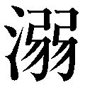

| 知っておきたい「この一句」 (PHP文庫) | |
| 黛まどか | |
| PHP研究所 (2007) | |
知っておきたい「この一句」
まどか
目次
装丁――こやまたかこ
装画――阿部真由美
杉田久女
私が俳句を始めるきっかけとなった一句です。
作者の杉田久女は、明治二十三年の生まれ。現在のお茶の水女子大学を卒業後、美術教師杉田宇内と結婚。北九州・小倉に移り住み、二女を育てながら「ホトトギス」で作句を始めます。昭和七年には、女流だけの俳誌「花衣」を創刊しましたが、諸事情からわずか五号で廃刊になりました。師である高浜虚子への傾倒があまりにも激しかったため、結果的には疎まれ、同人を除籍されるという憂き目にあいます。昭和二十一年、持病の腎臓病が悪化し不遇のうちに亡くなります。
〝花衣〟とは、花見のときの装いをいいます。昔の人は、花見に行くにも、それにふさわしく華やかに装ったのです。花冷えの畳の上にはらはらと落ちてゆく絹の紐。女性ならわかると思いますが、和服を着るときなんと多くの紐を使うことでしょう。まだ温みの残る彩とりどりの紐が、青畳の上に渦をなしてゆきます。まるでまとわりつくように......。
なんと艶冶で豊潤な世界でしょう。花の夜のたゆたう気分が句の隅々にまで漂っています。いかにも女性らしいデリケートな感覚ですね。
写生句として見ても鮮やかな一句ですが、実は掲句の〝紐〟は、単に和服の紐をさすのではなく、当時の女性たちを縛っていた多くの〝枷〟を表しているのです。まだまだ女性の地位が低かった時代、久女のような才能ある女性が台頭していくのが、よほど困難だったことがこの句からも窺えます。
俳人として、また母として、ひたむきに生きた境涯だったにもかかわらず、人に誤解されやすく、死後も誤ったイメージがついて回った久女の、心の叫びが聞こえてくるような作品です。
今、私たち女性が自由奔放に俳句を楽しむことができるのも、久女をはじめとする女流の先達の努力があったからだということを、忘れずにいたいと思います。そしてもう一つ、女性たちに俳句の門を開いたのは、高浜虚子です。大正二年「ホトトギス」誌上に設けられた〝婦人十句集〟をもって、女流俳句はようやく夜明けを迎えたのです。
飯田龍太
久女の句が俳句を始めるきっかけとなった一句だとすれば、龍太先生の右の句は私が「ヘップバーン」を続けるきっかけとなった一句です。「ヘップバーン」が発足してしばらく経った頃、人の離合集散の煩わしさに疲れ、解散しようかと思い立ったことがありました。そんなとき、日頃愛誦していたこの句が口をついて出たのです。離合集散とは決してマイナスの面だけではない、〝高みつつ〟あればそれでよいのだと一句に気づかされたのです。思えば、俳句を始めたばかりの頃から龍太先生の作品に目を開かされてきたような気がします。
紺絣春月重く出でしかな
紺絣は青年の着るもの。重く上がった春月に、多感な青年期の孤独感と青春の鬱屈がよく表れています。少し湿った絣の肌ざわり、大きく赤く山の端に上がった月、青年の鬱々とした胸のうち......。まだよく俳句を知らない私でしたが、十七音に秘められた、いいようのない力を覗き見た思いがしました。
大寒の一戸もかくれなき故郷
どの子にも涼しく風の吹く日かな
いきいきと三月生る雲の奥
一月の川一月の谷の中
など、氏の大きくて品格のある作品を口ずさんでいると、いつしか眼前の些事などはどうでもよくなって、まさに心が洗われていくようです。
〝春の鳶〟の句は、鳶の恋の情景を詠ったものです。雌雄二羽の鳶が、春ののどかな空をほしいままに、寄ったりわかれたりしながら睦んでいるのでしょう。円を描いたり、時には直線を描いたりしながら、大きな翼をゆったりと風に乗せ舞っているのです。
掲句は、上五・中七・下五と読み下してゆくうちに三つの展開をもたらします。〝春の鳶〟で、私たちはまず心の中で目線を大空に向けます。〝寄りわかれては〟で、二羽の舞う姿を思い浮かべます。そして〝わかれては〟の措辞によってできた空白で思いを巡らし、〝高みつつ〟で、さらに気高い心情へと上ってゆくのです。
一句のテーマは、成就への高み、飛翔です。そこにはおのずと作者である龍太先生の志の高さが表れていると思います。相寄ったり離れたりしながらも、常に高みを目指してゆく精神。恋にかぎらず、日々かくありたいと思う私です。
＊ヘップバーン...一九九四年に俳句サークル「東京ヘップバーン」を発足。一九九六年に俳句誌「月刊ヘップバーン」を創刊・主宰、二〇〇六年に通巻一〇〇号を機に終刊する。
加藤楸邨
戦後の作品を編んだ句集『野哭』に収められている一句です。「この書を今は亡き友に献げる」......。太平洋戦争で多くの句友、弟子を亡くした楸邨の嘆きと憤りが込められているのです。
終戦後のまだ混沌とした町中での一景でしょうか。もはや私の世代では一句の背景を想像するに難いのですが、一切の背景を除いても、売られゆかんとする雉子の姿は、はっきりとクローズアップされてきます。
雉子も鳴かずば打たれまい、という格言がありますが、春の繁殖期に雌を求めて〝けーんけーん〟と呼ぶ雄の鳴き声は、どこかもの悲しく聞こえます。また雄は美しい羽根と長い尾を持つことから、剥製にされ床の間などに置かれて観賞されてきました。掲句の雉子は、食用にされるのかもしれません。こと切れてぐったりとした姿の中に、かっと見開かれた雉子の眸を見た作者。こうこうと輝くその眸には、無念さと怒りが満ち溢れているかのようです。それはすなわち楸邨自身の怒りなのではないでしょうか。
棉の実を摘みゐてうたふこともなし
加藤楸邨は明治三十八年に東京で生まれました。中学卒業後、父の病気のために進学を断念し、代用教員となりますが、この頃から短歌に親しむようになります。昭和六年より水原秋櫻子に師事、「馬醉木」に投句。もともと短歌に手を染めていたことや抒情主義を提唱する秋櫻子に私淑したことから、初期の句風は和歌的なリリシズムをベースにしていました。その後、中村草田男や石田波郷と親交を深める中で、のちに人間探求派と呼ばれる句境へと志向してゆきます。
雲人に告ぐべきことならず
昭和十五年「寒雷」を創刊しますが、その翌年には太平洋戦争が勃発。金子兜太、沢木欣一、森澄雄氏といった高弟を次々に戦地に見送り、楸邨自身も東京で空襲に遭い、自宅を焼失します。これらの体験を通して深くなっていた心の闇は、楸邨いうところの〝ひとりごころ〟を呼び寄せたのではないでしょうか。
此の秋は何で年よる雲に鳥 芭蕉
芭蕉研究にも半生を費やした楸邨は、右の一句を次のように評釈しています。
「『此の秋は何で年よる』という独語的なものが『雲に鳥』という具象的で、寂寥に満ちた詩句に支えられているところに一句の眼目をみる。こうして形を与えられたその孤独感は、特定の事や物から来たものではなく、もっと深く人生の根源的なかなしみにかかわるものであって、もはや如何なるものをもってしても覆いがたいひとりごころである」（『芭蕉全句』筑摩書房より、一部要約）
独語に季語という形を与えて孤独感を深める手法は、鰯雲の一句をはじめとする楸邨の作風の一つでもあります。
憤ること、孤独と向き合うことをやめてしまった私たち世代に、死してなお鋭く輝く雉子の眼光をもって、人間存在の探求をせよと、楸邨が呼びかけてくるようです。
中村汀女
〝外にも出よ〟という呼びかけで始まるこの一句を、私はこれまで幾度となく声に出し、愛誦してきました。
〝触るゝばかりに〟姿をあらわした春の月。赤みを帯び、したたるような大きな月です。こんなにも素晴しい月が出ているのに、ちっとも気づかないで家に籠っているなんて......。さあ、外に出ませんか、手を伸ばせば触れそうなところに、見事な月が上がっていますよ......。これは、人々ヘの呼びかけであると同時に、自分自身への呼びかけでもあるのです。女性らしい静かな昂りがそこにあります。
月の面に自らの心を映すように立ち尽くす作者。汀女によって十七音の器に盛られた春の月は魔法にかけられたように、神秘的な輝きを持ち始めます。汀女の豊かな詩情に触れると、季題が俄然その存在感を大きくし始め、季語の本質が余すところなく引き出されます。
とどまればあたりにふゆる蜻蛉かな
稲妻のゆたかなる夜も寝べきころ
中村汀女が作句を始めたのは大正七年、女流俳句がようやく夜明けを迎えた頃のことです。熊本生まれの彼女は所属する「ホトトギス」を介して北九州に在住する杉田久女を知り、姉妹のように親交を深めてゆきます。結婚してのちしばらく句作を中断しますが、夫の転勤で移住した横浜で高浜虚子に直接指導を受ける機会に恵まれ、句作を再開します。平明で豊かな感性溢れる句風はたちまち評価され、星野立子と共に、虚子に絶讃されるところとなります。
足袋つぐやノラともならず教師妻 久女
ゆで玉子むけばかがやく花曇 汀女
汀女俳句の骨格は、家庭や生計の日常にあります。妻として母としての視点に揺るぎなく立ち、四季折々の哀歓を十七文字という器に愛情深く注ぎ込んでいます。久女作品の源泉に、女という性の悲哀があるとすれば、汀女の作品には、女という性を賜った誇りと喜び、自信が漂っています。
かくして同じ「台所俳句」から出発し、姉妹のごとく俳句につながった二人は、次第にその句境を違えていったのです。
昭和二十二年、汀女は「風花」を創刊します。句集、随筆集の出版、数々の名誉ある賞の受賞と、俳人としては恵まれた環境にありました。これも杉田久女と大きく違うところですが、私が汀女に共感するのは、賞に飾られたその栄光の足跡ではなく、女の根を大地に下ろし、しなやかな強さで、女性俳句を解放していったところにあります。
〝外にも出よ〟という弾むような呼びかけが、どれほどの女性を俳句に駆りたてたでしょう。汀女にとって〝外に出る〟ことは〝ノラになる〟ことではなく、花鳥風月に触れ、女性として生まれたことを謳歌すること、女性のしなやかな詩情を存分に春月に映すことだったのです。
能村登四郎
ナイフを使った暴行や強盗など、青少年による凶悪犯罪が多発する昨今です。彼らは何に怒り、何にキレ、何を求めようとしているのでしょうか。
思春期には、誰もがいいようのない心の憂鬱を体験します。受験や自分の将来、恋、人間関係など、子供時代には考えもしなかったような難題が、一気にのしかかってきます。大人への第一歩が始まっているのです。意のままにならないこれらの現実が、心の空腹感として彼らを襲うのです。
能村登四郎の代表句の一つである掲句もまた、青春の鬱気を内包した作品です。陸上部に所属する少年でしょうか、広い校庭の片隅で、一人黙々と槍投げの練習に没頭している姿が目に浮かびます。放課後の校庭で槍を投げては拾い、また投げては拾うその姿に、胸を掻きむしられるような切なさを感じます。打ち明けられない恋心、親や学校への反発、未来への期待と不安......。この一人の少年を取り巻く青春ならではの鬱屈と孤独が、〝槍投げて槍に歩み寄る〟という情景に余すところなく表出されています。
能村登四郎は、明治四十四年、東京谷中に生まれました。幼い頃から病弱だった氏は、中学生の頃から作句を始めます。
國學院大学在学中は、同校の講師でもあった歌人釈迢空（折口信夫）の主宰する短歌誌「装」に属し、その後、舞台を短歌から俳句に移して、「馬醉木」で俳句を学びます。
長靴に腰埋め野分の老教師
足袋あかき妻が追ひゆく厨芥車
昭和二十三年には、第一回馬醉木新人賞を、二十六年には第一回馬醉木新樹賞、翌二十七年には第二回馬醉木新樹賞を受賞しています。病弱で細身の氏からは想像できないような、力強い躍進です。この頃、氏は教師として、また家庭人としての自分に腰を据えた作句を展開、句を通して昭和二十年代の日本が見えてくるような作品が並びます。
火を焚くや枯野の沖を誰か過ぐ
昭和三十一年第三回馬醉木賞受賞、同年第五回現代俳句協会賞受賞。昭和四十五年には「沖」を創刊しますが、そのとき氏はすでに六十代に入ろうとしていました。柳のように細い身体にはたおやかな不屈のエネルギーが宿っているかのようです。
自らの病、戦災、子息の死......。さまざまな過酷な体験を通して、氏の眼ざしは心の深層へと沈潜していったのでしょう。
身を裂いて咲く朝顔のありにけり
かつて青少年は、ナイフを持って人を襲うのではなく、自らがナイフとなって、自分の心を切り裂いてゆきました。他人に向かうのではなく、自分に向かうことが、青春の鬱屈から脱出する唯一のすべであることを知っていたのです。槍投げの少年もまた、槍投げを通して心と向き合っているのです。
一句の背景に、春夕べの感傷的な空気と、モチーフを凝視する作者の春愁があることはいうまでもありません。
木下夕爾
菜の花畑に囲まれるようにある集落。のどかな春の田園風景が広がっています。時刻はちょうど灯ともし頃。村の家々からは、夕餉の仕度の煙が上がり、窓には明りがともされています。
掲句を〝家々が菜の花色の黄色い電灯をともしている〟ととると、あまりにも浅い解釈になってしまうでしょう。それでは内容が単なる報告で終わってしまいますし、〝菜の花〟が季語としての働きをなさなくなってしまうからです。
一面の花菜明りに浮かび上がるようにある家々。その窓明りの一つ一つに菜の花の黄が及んでいて、花菜明りと一体になっています。〝菜の花いろの燈をともし〟は詩人木下夕爾らしいレトリックなのです。
冬星のひとつを恃みつつあゆむ
早稲田第一高等学校入学と共に上京した夕爾は家業の薬局を継ぐため名古屋薬専に転入。昭和十三年、卒業と同時に郷里に戻って薬局を営み、終生ふるさとを離れることはありませんでした。
中学時代から詩作を続けていた夕爾を発掘したのは、詩人堀口大學です。第一詩集『田舎の食卓』で昭和十四年、文芸汎論詩集賞を受賞。詩壇で不動の地位を獲得しました。
夕爾が句作を始めたのは昭和十九年頃のこと。夕爾の詩情は俳句の上でも余すところなく表出されたのです。昭和二十一年には久保田万太郎に認められ「春燈」に創刊参加。安住敦を無二の友人として「春燈」で作句を続けてゆきます。昭和三十六年には広島春燈会を発足させ、機関誌「春雷」を創刊・主宰しました。
単なる余技としてではなく、俳句と深く関わるようになった夕爾は、同様に作句を試みた他の詩人たちとは一線を画し、詩、俳句と見事に両立させて、どちらでもその才能を存分に発揮してゆきました。
ひばりのす／みつけた／まだたれも知らない
あそこだ／水車小屋のわき／しんりょうしょの赤い屋根のみえる／あのむぎばたけだ
小さいたまごが／五つならんでる／まだたれにもいわない
（『ひばりのす 木下夕爾児童詩集』光書房刊より）
詩、俳句を貫く夕爾独自のやさしくたおやかな抒情性。菜の花色の灯をともしている家々は、詩人木下夕爾ならではの詩情溢れる把握といえましょう。何においても〝辛口〟がもてはやされる今の時代に、夕爾俳句の抒情性の持つ〝甘さ〟は、あらためて私たちに〝詩〟とは何か、詩情の出発点とは何だったのかを問いかけてくるようです。
長かった冬が終わり、ようやく春が訪れた田園の家々は、菜の花の花明りの中に灯をともしています。帰ってくる人のいる灯、家族を待つ菜の花色の灯は、春の喜び、市井の日常の喜びの象徴であり、夕爾が生涯を過ごしたふるさとの平和の象徴でもあったのです。
角川源義
桜の頃を迎えると、人々は花の下に集い、酔い、花を愛でます。ましてや詠み人なら、心浮き立たずにはいられません。そしてこの人を思うのです。西行法師......彼は生涯を通して桜に執し、夥しい桜の歌を作りました。
北面の武士だった西行は、二十三歳で突然出家し、漂泊の歌人となりました。保元の乱に始まる陰惨な時代的背景、待賢門院璋子への断ち切れぬ恋慕など、その経緯には幾つかの原因が挙げられますが、地位も名誉も妻子をも捨て、厭世の生き方を選ぶに至るには、相当の理由と覚悟があったに違いありません。漂泊の日々の中で西行は桜に会い、桜を愛で、七十三年の生涯を通じて桜を詠み継いでいったのです。
掲句は、まさに〝花の歌人〟西行への表敬の一句です。詠み人たちよ、桜の下に立ったら、まず西行法師を思えと呼びかけているのです。
角川源義は、大正六年十月九日、富山県に生まれました。中学生の頃から、俳句に関心を持ち始め、昭和七年には俳誌「草上」に投句。國學院大学で、柳田国男、折口信夫、武田祐吉に師事し民俗学を専攻。のちに、語り物文芸の研究により博士号を取得します。
昭和二十年、角川書店を創立。二十七年には同社から総合誌「俳句」を、次いで「短歌」を創刊します。自らの句作活動では、俳誌「古志」同人参加を経て、昭和三十三年に「河」を創刊、主宰となりました。
「河」誌での指導や会員の育成に励む一方、俳人協会の設立や、角川俳句賞、短歌賞、蛇笏賞、迢空賞の設定、俳句文学館の創設と、現在の俳壇の礎を作り、短詩型文学の発展に心血を注ぎました。
篁に一水まぎる秋燕
ロダンの首泰山木は花得たり
俳句において源義がこだわり続けたのは〝抒情性の恢復〟と〝二句一章〟でした。そしてその主張は、自らの作品にも厳格に貫かれていました。
実作者として、文学者として、出版人として、広い視野で多面的に俳句と関わっていった源義ですが、その出発点には、〝詠み人〟としての決意と覚悟が揺るぎなく存在しています。だからこそ、西行の凄絶な生き方に共鳴できたのではないでしょうか。
西行は、春が巡ってくると、花の下に佇み、桜に人の世の無常や、自らの定まらぬ心を映したのです。掲句は私たちに、多少なりとも俳句に関わっている者にとって、桜はもはや日常の桜、つまり宴や見物のための花ではないと強く促してきます。詠み人として花の下に佇め、花を仰げと警告しているのです。かつて芭蕉が西行を慕いそうしたように......、かつて源義がそうしたように、花と向き合うこと、いにしえの詠み人たちと心を通わせることを促しているのです。
「願はくは花のもとにて春死なむ......」と詠ったとおり、西行が陰暦二月十五日花の頃に亡くなっていることはよく知られています。が、たとえ忌日でなくとも、花があれば、西行の日であると言い切った源義もまた西行と共に、花の頃になると偲ばれる人の一人です。
松本たかし
寄せては返してゆく波が、洗い上げたばかりの砂の上に残していったものは、ひとひらの桜貝でした。終わることのない波の反復に、淡い桜貝が句読点のように置かれ、宇宙の鼓動の一瞬を鮮やかに切り取っています。波が引いてから、次の波がやってくるまでのほんの束の間の静寂と清浄感が、一句の隅々にまで充ちています。そして置き去りにされた小さな桜貝が、読者に何かを語り始めるのです。
羅をゆるやかに着て崩れざる
松本たかしは、明治三十九年に東京神田に、宝生流座付の能役者を父祖に生まれました。家業を継承すべく、六歳の頃より能の修業に入ったたかしでしたが、大正九年、肺尖カタルを患い、療養生活に入ります。以後、能の世界から遠ざからざるを得なくなりました。そして、療養中のたかしを見舞った父が「ホトトギス」を持参したことがきっかけで俳句に興味を持つようになりました。翌大正十年から、高浜虚子に師事、作句を始めます。二十四歳の若さで「ホトトギス」同人となったたかしは、能の道と訣別。いよいよ俳句に志を立て、これ一筋に道を絞ります。
とつぷりと後暮れゐし焚火かな
流れゆく椿を風の押しとどむ
秋水のおのづからなる水輪かな
病弱の身を抱えての再出発。芸術の神ミューズは、たかしに能の舞台ではなく、俳句の舞台に立たせる決断を下したのです。幼い頃より能の稽古場で培われた高雅な空気が、俳句の上でも自ずと表れているように見えます。昂る感情を抑え、あらぶる呼吸を整えて対象に肉迫する忍耐力は、能楽の修練で鍛えられた筋肉によるもののように思えます。
夢に舞ふ能美しや冬籠
昭和十六年、たかし三十六歳の一句。叶わなかった能舞台に立つ自身を、夢の中に見ているのです。芸で鍛えた精神を、花鳥諷詠に注ぎ込んだたかしは、立ち姿の美しい独自の句風を切り拓いてゆきます。
自然の扉の奥に隠された秘密をさぐりつつ、自らの力量を養い、少しなりともその隠れた機微に手を触れたいと願い続けてたかしは、晩年になってこの〝只管写生〟を説き、昭和二十一年「笛」を創刊・主宰し、〝只管写生〟を掲げ、実作第一主義で、後進の指導にあたりました。
昭和二十八年、句集『石魂』により、第五回読売文学賞を受賞しますが、そのわずか三年後、昭和三十一年に脳溢血のため逝去。「笛」は、妻つや女によって継承されました。
寄せる波よりも、引く波に。さらに波が引いた後の砂に、その上に残された一片の桜貝に、心の焦点を絞っていったたかし。能を諦め、病身を諦め、引き算を重ねたのちに残った俳句という舞台。そこに残された珠玉の作品は、波の引いた跡に残された桜貝のように、私たちに何かを語り続けます。
臼田亜浪
命あるものには、必ず死の瞬間がやってきます。どんなに手を尽くしてもその運命に抗うことはできません。死期の訪れたものは死にゆくしかない。そうきっぱりと言い切ったあとに、まっ赤に燃える躑躅を見た作者。死への恐怖、生への未練を断ち切るかのように、〝死に行く〟と大きな切れを入れ、さらに命の象徴のような躑躅の赤を置きました。それは逆に作者の死への執着の深さを表しているかのようでもあります。野見山朱鳥は、掲句を「悟ったような心境の句でありながら『死ぬものは死に行く』と云うところ、『躑躅燃えてをり』とつながるところなど、真の諦観は感じられないものが反発してくる」と述していますが、〝死に行く〟と〝躑躅〟の間にある切れの空間は、死と生の間であり、悟りと執着の間でもあるようです。
臼田亜浪は明治十二年二月、長野県小諸に生まれました。本名は卯一郎。明治二十七年、十五歳の折、同郷の中村嵐松父子を介して俳句を始めます。またこの頃から漢書も学び始めます。明治二十八年小諸塾に学び、一時、町役場に籍を置くものの、翌二十九年上京。正岡子規と出会います。工手学校予科、明治法律学校と転じた末、病により一時帰郷します。明治三十二年再び上京。三十四年和仏法律学校（現・法政大学）に入学。その年の十一月には妻を得ます。翌年より、俳句を高浜虚子に、短歌を与謝野鉄幹に師事。三十七年にようやく和仏法律学校を卒業しました。
明治三十九年、電報新聞社に入社、『横浜貿易新報』編集長、『やまと新聞』編集長などを経て、ジャーナリストとして活躍しますが、その頃亜浪は俳句の世界を離れていました。しかし大正三年、腎臓を病んで、信州渋温泉に湯治していた亜浪は、そこで偶然にも虚子と再会。亜浪は俳句から離れていたつもりでも、俳句の神は亜浪を離れなかったのかもしれません。かくて俳壇への本格復帰を果たすのです。
大正四年、大須賀乙字の援助の下、俳句に求める心を〝まこと〟に求め、「石楠」を創刊。『やまと新聞』編集長を辞し、俳句一筋の道を歩み出します。
郭公や何処までゆかば人に はむ
はむ
木曾路ゆく我れも旅人散る木の葉
旅にあることが多かった亜浪ですが、詩壇や歌壇との交流も積極的に図り、閉鎖的になりがちな俳壇に、外の風を送り続けました。
鵯のそれきり鳴かず雪の暮
俳句表現の妙味は、〝空白〟にあると説いた亜浪の俳句観を、そのまま作品にしたような一句です。鵯の最後の一声を余韻に残して、暮れようとしている雪原。ふるさと信州に見た風景でしょうか。あるいは旅の途上に出合った風景でしょうか。暮れ残る雪の白さに美しさを超えたさまざまな余情が去来します。そしてその空白は、冒頭の一句中の切れにも共通しています。
妻あらばとぞもふ朝顔赤き咲く
亜浪の〝生死〟への執着の旅は、終戦後の妻の死に始まったのかもしれません。死を諦観しきれない思いを、朝顔の赤に、躑躅の赤に託した亜浪。その赤い色には、死を生の営みの一つとして受け入れることで、決着をつけようとする亜浪の執念を見ることができます。
小林一茶
雪国にようやく遅い春が訪れました。長い冬の間、雪に閉ざされて外で遊ぶことのできなかった子供たちが、村を駆け回っています。遠景描写でありながら、春光を受けて輝くばかりの子供たちの笑顔が見え、また賑やかな声までもが聞こえてくるような一句です。誰にでもわかる平明な表現の中に、溢れんばかりの春の喜びと、子供たちを見守る愛情深い眼ざしがあり、読者の心を捉えます。
雀の子そこのけそこのけ御馬が通る
名月を取てくれろとなく子哉
一茶の作品は、教科書にも度々登場し、広く親しまれています。子供や小動物を詠んだ作品はいずれも平明であたたかく、私たちはいつしか、その句風と一茶という人の人柄をそのまま重ね合わせています。しかし、一茶の境涯を繙くとき、その凄絶な人生と作品のあまりのギャップに、私たちは衝撃を受けずにはいられません。
我と来て遊べや親のない雀
せ蛙負けるな一茶これにあり
小林一茶（通称弥太郎）は、宝暦十三年（一七六三年）、信濃国水内郡柏原村（現・長野県上水内郡信濃町）に生を受けました。三歳の折、母くにを亡くし、五年後に父は後妻を貰います。一茶十歳の折、異母弟が生まれ、この頃から継母との反目が始まり、ついに生涯継母、異母弟との確執に明け暮れることになります。
安永六年（一七七七年）、一茶は十五歳で単身江戸へ上ります。二十代にはすでに俳諧を嗜み、寛政元年（一七八九年）に成された『俳諧千題集』には一茶の号を使い三句入集されています。
三十代は、九州、四国、関西と旅から旅への放浪生活を送ります。
もともと肉親愛に恵まれなかった一茶に、さらに不幸が訪れます。享和元年（一八〇一年）、最愛の父が六十九歳で没するのです。このときから文化十年（一八一三年）に至るまでの実に十二年間、一茶は父の遺したわずかな財産をめぐって継母、異母弟と骨肉の争いを繰り広げます。菩提寺の住職が間に入ってようやく遺産問題に決着がつき、一茶はふるさと柏原に家を得て定住するようになります。そして翌文化十一年、一茶は五十二歳にして、初めて妻帯するのです。
五十聟天窓をかくす扇かな
妻の菊は二十八歳、親子ほど違う歳の差を照れているのですが、ようやく人並の幸せを掴んだ一茶の喜びようが見られます。冒頭の一句も、この年に詠まれたものです。そして結婚から二年後、一茶は五十四歳にして初めて子を得ます。しかし喜びも束の間、長男千太郎はわずか一カ月で夭折。翌々年に授かった長女さとは満一歳の可愛い盛りで病を得て亡くなります。さらに次男万太郎を事故で失い、三男金三郎、妻菊と相次いで失うのです。菊と死別した翌年再婚した雪とは二カ月余りで離婚。六十四歳でやをと結婚するものの、翌年の柏原の大火で家を焼失し、焼け跡に残った土蔵の中で、六十五歳の生涯を閉じました。
思ふまじ見まじとすれど我家哉
芭蕉のそれとは一見対照的な人間臭い一茶の生き方は、俳句というフィルターを通すことで昇華されてゆきました。雪解けの村いっぱいに放たれた子供たちの姿は、一茶の理想郷だったのではないでしょうか。
一茶が亡くなった翌年に生まれた遺腹の娘やたは、一茶の子の中で唯一成人し、四十六歳の生涯を送ったのでした。
長谷川双魚
家族が皆寝しずまった後の深夜の風呂に、受験生の子が一人湯に浸かっています。こうやって入浴している間も、おそらく頭の中は数字や英単語で、心の中は不安でいっぱいになっていることでしょう。それでも一日の日課を無事終え、ようやく熱い湯に浸ることのできた受験生に、束の間の安息のときがやってきました。湯船のまん中に首だけ出している受験生に、孤独と悲哀を見た作者。主情をぐっと抑え、叙景に徹したことで受験生の内にある押しつぶされそうなほどの不安感と孤独が、逆に読者に迫ってきます。対象に深く斬り込み、凝視した上で描きとった句風は、作者双魚の真骨頂です。
冬扇おもひ出せしが忘れけり
初泣きの水飲みてよき声を出す
長谷川双魚は、明治三十年十一月九日、岐阜県安八郡墨俣町（現・大垣市墨俣町）に生まれました。幼い頃肺炎を患い、その後も青年期に結核を患ったという双魚ですが、いずれも奇蹟的に恢復、さらにインドでコレラに、朝鮮で肺膿瘍にかかりますが、それらも克服。病だけではありません。双魚はその他にも数々の数奇な運命を切り抜けています。
大正九年、父の死を機に、勤めていた大阪の貿易会社を辞し、ふるさとへ戻った双魚は、中学校の英語教師となり各地に赴任します。そして昭和二十年、朝鮮北部の中学校長をしていた双魚は、終戦の直前に南へ移され、シベリア送致を危うく逃れたのでした。
「数えたら切りのないこういう時運の締めくくりのように」と双魚自身が述している数奇な巡り合わせの最後の一つが、のちに妻となる久々子氏との出会いでした。昭和四十二年三月、二人は四十三歳の歳の差を超えて結婚します。
双魚の俳句の道の歩みは、堅実で地道でした。昭和十七年「雲母」に入会、作句を始めた双魚は、昭和二十六年「雲母」同人となり、四十五年には山廬賞を受賞します。そして四十六年一月、木下青嶂の逝去にともない、その後「青樹」主宰を引き継ぎます。
夜の秋火だねのやうな女の目
「久々子の出現は、晩年の私に、大いなる幸運と共に、いままで味わったことの無い人間的な幸福をもたらした。それは純粋であたたかく高い知性の至福であった」。妻久々子氏の句集『水辺』に寄せた双魚の序文より引いており、この稿を書いたとき、すでに双魚は死の床にありました。双魚の影響で俳句を始めた久々子氏は、「青樹」を陰で支え続けます。自ら贖罪の一文と述した、この祈りにも似た感謝の言葉に充ちた双魚の序文は、夫婦として、また同志として共に生の喜びを分かち合った久々子氏へ宛てた恋文のようにも見えます。
昭和六十二年、双魚は若い頃に患った呼吸器疾患の後遺症が出て、床に臥すようになります。
雀の子一尺とんでひとつとや
年きけばちやんちやんこより指出して
日のあたる柚子を見てゐる夫婦かな
最後の句集となった『ひとつとや』で、六十一年、第二十回蛇笏賞受賞。六十二年、「青樹」主宰を妻に託した冬、永眠しました。双魚の句には飄々としたおかしみの中に悲しみと艶があります。最愛の人久々子氏の存在が、大きく影響していることは確かでしょう。多くの病と数奇な運命に巻き込まれながらも、流れに逆らうことなく、しなやかに生き抜いた双魚。その受身の強さのうちに培われた個性は、滋味深く俳句に反映されています。
夏目漱石
早春の日だまりの中にひっそりと咲いている菫。可憐な花なのに、時にはコンクリートのわずかな裂け目や石段のすき間に咲き出でて、私たちをはっとさせたりします。薔薇や曼珠沙華のように、強く自己主張するわけではないけれど、確実に、春を告げ、人々の心をなぐさめる菫のような人に生まれたかった......と作者はいっています。作者がかの明治の文豪夏目漱石とわかれば、意外なようにも、またなるほどと頷けるようにもとれる一句です。
秋風や唐紅の咽喉仏
叩かれて昼の蚊を吐く木魚哉
夏目漱石は、慶応三年（一八六七年）一月、東京牛込に生まれました。幼少の頃より文学に開眼。明治十四年、府立第一中学校から麹町の二松学舎に転校した漱石は漢学を学ぶようになりました。明治十九年、第一高等中学校に通っていた漱石でしたが、勉強を軽視していた上に腹膜炎を患って落第してしまいます。これを機に以後卒業まで首席を貫いたといいますから、負けず嫌いの漱石の一端が見えるようです。
明治二十二年一月、漱石に人生の転機ともいえる大きな出会いが訪れます。大学予備門で同窓生だった正岡子規との出会いでした。子規から自作の和漢詩文集「七艸集」を渡された漱石は、読後評の最後に〝漱石〟と署名。ここで初めて金之助は漱石となるのです。文学よりもむしろ共通の趣味だった寄席通いがきっかけで急接近した子規と漱石でしたが、心を開くと共に互いの文学熱があい高まってゆきました。
明治二十三年九月、東京帝国大学文科大学英文科に入学。卒業後、肺結核のための療養生活などを経て、明治二十八年に松山中学に英語教諭として赴任し、日清戦争に新聞記者として従軍中喀血し帰郷した子規と再会するのです。子規は上京するまでの約二カ月間、漱石の下宿に同居。子規はここを愚陀仏庵と名付けて、多くの俳句仲間が日々出入りしていたといいます。この影響を受けて、漱石自身も句作に熱中するようになり、この一年で四百を超える句を作っています。翌年には熊本の第五高等学校に転任し、結婚。さらに五百句に及ぶ句を一年間に紡ぎ出しています。
肩に来て人懐かしや赤蜻蛉
明治三十三年、妻子を日本に残し単身英国へと留学した漱石は、ロンドンで学費の不足やホームシックからひどい神経衰弱に陥ります。そして帰国の途につく直前に、子規の訃報を聞くのです。
手向くべき線香もなくて暮の秋
親友でありライバルであった子規を失った漱石は、俳句への情熱を失い、小説を書き始めます。明治三十八年、「ホトトギス」に連載された「吾輩は猫である」が評判となり、その後は教員を辞し、次々と小説を世に送り出しました。そして明治四十三年、胃潰瘍のために吐血した漱石は、その頃から再び俳句を作り始めました。
明治を代表する文豪が最後に再び向き合ったものは俳句という最小の器であり、菫のように小さな命だったのです。
「これからもただの夏目なにがしで生きてゆくから」
明治四十四年、文学博士号を辞退した折の漱石の言葉は、そのまま一句の自解となっています。
松尾芭蕉
尾形仂編の『芭蕉必携』（学燈社刊）は、尾形氏はじめ平井照敏、那珂太郎、山下一海、佐藤和夫、櫻井武次郎といった屈指の芭蕉研究家の芭蕉観が寄せられていて、大変興味深いものです。
その中で平井照敏氏は、かつて尾形仂氏と対談をしたときに、尾形氏から「あなたにとってなぜ芭蕉か」という問いかけをされ、たじろぎを覚えたと冒頭に書かれています。「これはあまりにも根柢的な質問であり、私にとっては、『なぜ俳句か』という問いかけと置きかえることもできるようなものだったからである」と氏は続けています。
また山下一海氏は、おもしろかった話として、テレビのクイズ番組で〈菜の花や月は東に日は西に〉は芭蕉の作かという問題が出て、回答者がイエスと答えて失格したというエピソードを挙げています。一句は與謝蕪村の作ですが、氏のいうおもしろさとは、回答者が蕪村の作だということを知らなかったということではなく、聞いたことのあるような俳句だから芭蕉だといっておけば当たるだろうと思ったらしい、そして出題者もそこを狙ったらしい、そのことだといっています。「花は桜木、人は武士、というようなぐあいに、俳句は芭蕉、なのである」。
松尾芭蕉は、寛永二十一年（一六四四年）に伊賀国（現・三重県伊賀市）の上野または柘植に生まれます。十九歳の頃、藤堂藩藤堂新七郎良精の嗣子良忠に仕えるようになります。良忠が俳諧を嗜んでいたことから、芭蕉もこの頃から俳諧に親しむようになったようです。寛文六年（一六六六年）、良忠の死去に伴い致仕して、上野の兄のもとに身を寄せますが、たびたび京都へ上り貞門俳諧にいそしみます。寛文十二年（一六七二年）、二十九歳のときに刊行した『貝おほひ』をもって俳壇に華々しくデビュー。江戸に出てしばらくは談林俳諧に傾倒します。しかし日々〝新しみ〟を追窮し、一つところにとどまらない芭蕉は、三十代後半からは『野ざらし紀行』を皮切りに、旅から旅への漂泊を始めます。〝うき我を〟の句は、伊勢長島の大智寺で作られたとも、京都金福寺で作られたともいわれていますが、実は初案は、
うき我をさびしがらせよ秋の寺
だったそうです。が後年、京都落柿舎で閑古鳥の声を聞き改案したのだそうです。芭蕉の俳句に対する執念が見える一句です。憂いごとが多く持て余したこの時間を、閑古鳥よもっと啼いて、もっと淋しがらせてくれ......といった句意ですが、孤高の精神を貫こうとする芭蕉の厳しい意志が窺えます。『奧の細道』から入るのもいいですし、芭蕉の入門書から入るのもいいでしょう。俳句を始めたからには、是非、俳聖芭蕉の世界を旅してみることをお勧めします。
與謝蕪村
俳句を始めて間もない方の中には、〝涼しさ〟が夏の季語だということにピンとこない人も多いと思います。夏は暑いのに、なぜ〝涼し〟は夏の季語に入るのか、そこが俳句の深いところ。暑いからこそ、わずかな涼気でも感じとり、それを楽しむのです。〝涼し〟とは、風雅を解する心が、生み出すものなのかもしれません。
冷房のなかった時代は、団扇や扇子を使って風をおこしたり、夕涼みをしたり、あるいは風鈴や吊忍など音や見た目に涼を感じとったりと、さまざまな工夫を凝らしました。どこへ行ってもクーラーが効いている現代より、〝涼〟に対する感覚がずっと鋭かったのでしょう。いずれにせよ、風流を好む日本人独特の感性が生み出した季語といえるでしょう。
ところで與謝蕪村は、芭蕉、一茶と並んで有名な俳人です。誰でも一度は学生時代、教科書で学んだことと思います。
春の海ひねもすのたりかな
菜の花や月は東に日は西に
月天心貧しき町を通りけり
など、一般の人にも馴染みの秀句を多く残しています。蕪村は享保元年（一七一六年）に生まれ、二十一歳の頃江戸に出て、儒教や絵画や俳句を学びます。のちに京都に居を構え、京都俳壇で活躍しますが、蕪村もまた多くの俳人と同様、芭蕉に私淑した一人でした。
蕪村の墓は、京都の金福寺にあります。かつて芭蕉が山城の東西を吟行した折に立ち寄ったとされる芭蕉庵の後丘に建てられていますが、これは生前詠んだ、
我も死して碑に辺せむ枯尾花
の遺志を継ぎ、高弟たちが望みどおり芭蕉碑の近くに納骨したものだそうです。私も以前金福寺に赴く機会に恵まれましたが、石碑には芭蕉を称えた蕪村の一文が刻まれていて、あらためて蕪村の芭蕉への深い思いが伝わってきました。
一句は、涼風の吹く夕暮に、寺から響いてくる鐘の音を詠んだものでしょう。鐘の音色によって〝涼しさ〟がいっそう増したともいえます。〝鐘の音〟ではなく〝声〟としたところに独自の発想があります。一打一打の間合に広がっていくように......。鐘から離れた鐘の音は、まるで魂を持ったかのように、空間を渡ってゆきます。
〝日本の音風景百選〟が環境庁（現・環境省）によって選ばれましたが、その中には近江の三井寺、京都の妙心寺をはじめとする梵鐘の音が実に多く挙げられていました。なぜ鐘の音は時代を超えて私たちの心を捉えるのでしょうか。さまざまな騒音が溢れる現代にあって、鐘の音は突き抜けた感じがします。乗り物や工事現場などの騒音、街騒の中に、他の音とは違う時空を響いてくる、そんな気がします。そしてその音色は、私たちの心の深いところまで突き抜けて届き、しみじみとした感慨をもたらすのです。
同じ鐘の音を聴いても、受けとり方はさまざまですが、〝涼しさ〟を感受した蕪村に、清冽な句境を見る思いです。
芭蕉の名句、
閑さや岩にしみ入るの声
に呼応するような一句ですね。
三橋敏雄
氏の晩年の代表作の一つ。掲句を含む句集『畳の上』で、俳壇の最高峰蛇笏賞を受賞されています。
さて、戦争を知らない世代は一句を読んで、どんな情景を思い浮かべるでしょうか。私は、たった今ふるさとに帰った復員兵の姿を想像しました。〝団扇〟は夏のものですから、一句は終戦の頃を詠ったものと思われます。戦場から命からがら生還した兵士の目の前に、夢にまで見た我家があります。玄関を入ると、なつかしい家の匂いに包まれました。大きな柱時計、蝿帳の載った卓袱台、何もかもが出征前と同じです。靴を脱ぎ、ようやく我家に帰ったという安堵感。平和の実感の象徴として見たのが、畳の上に何気なく置かれた団扇だったのではないでしょうか。一句の背景には、青々と広がる田園や藁屋根の家、庭を走る鶏、万緑の山々や小川など、典型的な日本のふるさとがあります。国破れて山河あり......兵士を待っていたのは、昔と同じふるさとの山河だったのです。
掲句は、〝戦争〟と〝畳の上の団扇〟の二物をぶつけ合うことで、一つの宇宙を構築しています。しかもその二つのファクターが、どの角度から切っても〝対照〟〝対極〟の関係として存在しているのです。非日常と日常、暗と明、大と小、前線と銃後、殺戮と平和、そして〝戦争〟という〝抽象〟と〝団扇〟という〝具象〟の並列に、私は最も注目しました。この思い切った表現に、氏の卓越した言語感覚を見ることができます。〝戦争〟という漠然とした大きな恐怖から、小さな団扇にピンを絞ってゆく過程に、吸い込まれるようなスピード感さえ覚えます。〝畳の上の団扇〟には、百万語を費やしても語り尽くせない、物に語らせることの圧倒的な力が存在しています。まさに俳句という形式を、最大限に生かしているのです。
三橋敏雄は昭和十二年に、新興俳句運動に共感して同人誌「風」に参加します。新興俳句とは、俳壇の主流であった〝花鳥諷詠〟に対して異議を唱え、俳句革新を図った運動です。氏は渡辺白泉や西東三鬼に師事し、無季俳句を推進。のちに「京大俳句」に参加して、戦時下では弾圧の嵐にも巻き込まれるのです。
いつせいに柱の燃ゆる都かな
そらを撃ち野砲砲身あとずさる
暗闇を殴りつつ行く五月かな
一貫した骨太の作品は、その激しい葛藤と生きざまの中から生まれたといってよいでしょう。氏はまた練習船のパーサーとして活躍される傍ら、遺骨収集などの戦後の処理にも関わってこられたと聞きます。帆船の好きな私が、お目にかかるたびに「日本丸」時代のお話を伺うと、いつも快く話してくださいました。シーマン・シップが長年の習いとなっているのでしょうか、その作品の力強さとは対照的に、素顔は大変なフェミニストであったことも付記しておきます。
藤田湘子
〝愛〟という言葉を使っていながら、掲句には、恋愛のそれのような甘美な匂いは微塵もありません。どこまでも冷淡で救いがたいような重苦しい現実が、海の広がりに揺曳されています。
恋愛、肉親愛、友愛......愛にはさまざまなかたちがありますが、掲句の愛は、実は師弟愛を詠んだものです。
師の愛を獲得できない青年が、師の視界からはるか遠くにあって、その渇きを静めるがごとく闇雲に泳いでいます。その青年とは、作者の藤田湘子氏に他なりません。
真青な中より実梅落ちにけり
氏は十代の頃、水原秋櫻子著の『現代俳句論』を読み、感銘したことがきっかけで、昭和十八年「馬醉木」に入会、秋櫻子に師事し選を仰ぐことになります。
入会から五年後の昭和二十三年には馬醉木新人賞を受賞。二十六年、二十九年には馬醉木新樹賞、三十二年には馬醉木賞を受賞し、同年には「馬醉木」編集長に就任するところとなりました。これらの経歴を見るかぎり、まさに順風満帆。秋櫻子から早くにその才能を認められ、輝かしいばかりの作句生活を送られていたかのように見えますが、実はその陰に、凄まじい師弟の葛藤のドラマが存在していたのです。
石川桂郎、石田波郷、瀧春一、石塚友二、能村登四郎といった錚々たる先輩、ライバルを誌友に持ち、師の寵愛を受け、恍惚と不安の中にもエネルギッシュに邁進する氏に、それは突然起こりました。恋愛関係になった女性が、秋櫻子の好まざる女性会員であったために、師の逆鱗に触れ、以後二年半徹底して遠ざけられることになるのです。
かなかなや師弟の道も恋に似る 瀧 春一
「『理不尽な......』との思いが私の脳裡をチラとよぎったが、秋櫻子を離れぬと決めた以上は、この難関を耐えるよりほかなかった」（『俳句の方法』角川書店より）
八王子にある秋櫻子の喜雨亭に招かれることも、親しく声を掛けられることもなくなり、あっという間に秋櫻子の愛弟子、側近という立場から転落してしまった氏の困惑とやり場のない憤り、深い悲しみは、想像を絶するものだったに違いありません。氏は、佳い俳句を作ることで信頼を回復し、この逆境を乗り越えようと決意します。が、決意とはうらはらに、作句力は低落する一方だったといいます。屈辱感と疎外感にさいなまれ、深い心の闇を抱えた氏が、暗い沼の底から絞り出すように生み出した一句が冒頭の句です。
師からも誌友からも離れ、一人孤独にあった氏は、それでも自らの進むべき方向を目指して、一直線に泳いでゆきます。どんな苦境にあっても決して泳ぐこと、作句をやめなかった氏は、再び秋櫻子の信頼をとり戻し、「馬醉木」の発展に尽力。失意の底から生まれた一句は、のちに人口に膾炙するところとなりました。
〝愛されずして〟という苦い経験を踏み台に、不屈の俳人が誕生したのです。
鈴木真砂女
少し胸高にきりりと締められた夏帯。華やかな場に行くための装いの帯ではありません。働く帯です。汗が襦袢や着物を通して帯にまで及んでいます。それでも片時も休むことなく働き続ける女性。〝切りひらき切りひらき〟のリフレインに毅然とした決意と覚悟が表れています。
鈴木真砂女の波乱にとんだ境涯は、あらためてここに記す必要がないほど知られているところです。
掲句が作られたのは、氏が銀座で営んでいた小料理店「卯波」を始めたばかりの頃のこと。当時で二百万円の借金を背負い、女一人で再出発した人生の転換期でもありました。
夫も子も家に残し、裸一貫で家を飛び出したときすでに五十歳。本来なら子育ても大方終わり安定した時期に入ってゆく年齢に、それまで積み上げてきた一個人の歴史をすべて白紙に戻すべく何もかも手放したのです。唯一の愛する人を追って......。
鈴木真砂女は明治三十九年、千葉県鴨川市にある旅館吉田屋（現・鴨川グランドホテル）に三女として生まれました。日本橋の大店に嫁ぎ一女をなしましたが、突然の夫の出奔であえなく離婚、実家に戻りますが、昭和十年、姉の急逝により吉田屋を継ぎ、姉の夫と再婚。生前俳句を嗜んでいた姉の遺句集を編むため、姉の師であった俳人大場白水郎に会い、作句を勧められ、自身も俳句を作るようになったといいます。昭和二十二年「春燈」に入会。久保田万太郎を経て安住敦に師事します。
羅や人悲します恋をして
曼珠沙華とことん人にれけり
螢火や女の道をふみはづし
昭和三十二年、愛する人を追ってハンドバッグ一つで家を出た真砂女は、アパートさえ借りる余裕もないまま、店に寝泊りし銭湯通いをする日々だったといいます。借金を返すまではと着物一枚作ることもなく帯に汗してがんばり抜いた真砂女の横顔には、明治生まれの女性特有の忍耐強さと矜持が感じられますが、作句を始めて以来、いかなる境遇にあったときも、決して欠詠することがなかったという作句姿勢にもそれを感じることができます。幸運はただ待っていても決してあちらからやってきてはくれません。私たちは常に田を耕しながら、運を切り開いていくのです。
今生のいまが倖せ衣被
真砂女の決して涸渇することのないエネルギーに、私たち読者は圧倒されます。そして決して気張らないさりげない筆致の中に、他の追随を許さない揺るぎない再生力を私はいつも見出します。
積み上げたものを、ためらうことなく自ら焼き尽くし、再びゼロから積み上げ始める。そんな再生のドラマを、彼女の生きざまや俳句に見るたびに、私は運命を受け入れたときに発する人の強さを思うのです。過去を鞄に入れたまま旅に出ることを潔しとしなかった真砂女の勇敢な生き方は、さまざまな障害をプラスに転じ、〝今生のいまが倖せ〟と言い切れる晩年を築き上げたのです。
久保田万太郎
祭の騒ぎの中をひたすらに流れる神田川。非日常と日常、動と静、虚と実......。〝祭〟と〝神田川〟の間には対極ともいえる関係が成立しています。
東京は下町、年に一度の夏祭に地元江戸っ子も見物人もごった返しています。人々が浮かれ、酔い、熱狂している中を、神田川はいつもと同じ速さ、いつもと同じ表情で町を抜けてゆきます。決して大きな川ではない、暮らしの川です。年に一度の祭を〝晴〟とすれば、川の流れは〝褻〟。熱狂の裡に、人の世の真を捉えようとする作者の厳しい眼ざしが感じられる一句です。
久保田万太郎は、明治二十二年、東京浅草に生まれました。生家は祖父の代から浅草で袋物業を営む商家。万太郎俳句の特徴の一つである江戸趣味的な情趣は、生来身についたものだったのです。幼少の頃から文学に親しんだ万太郎は、長男でありながら家業を継がず、小説家、劇作家として生計を立てることになります。昭和十二年、岸田國士らと共に劇団文学座を結成。その傍らで句作を続け、昭和二十一年には俳誌「春燈」を創刊しますが、彼にとって俳句はあくまで余技であるとする俳句余技説を貫きました。
万太郎俳句の作風の特色は幾つかありますが、日常些事を題材にした人事句、劇作家の本領を窺わせる前書きの多用とその巧みさ、そして洗練された言葉遊びなどが挙げられるでしょう。
石蹴りの子に道きくや一葉忌
吉原にむかし大火のおぼろかな
竹馬やいろはにほへとちりぢりに
湯豆腐やいのちのはてのうすあかり
言葉を自在に巧みに駆使し、掌から鳩を飛ばすように句を生み出していったかのごとく見える作品群。苦吟の跡を見せないことも彼の美学の一つだったかもしれません。戯曲家として成功を収めた万太郎は、交友関係も含めて常に華やかな日の当たる場所に存在し続けました。しかし一見華やかに見える彼の境涯も、私生活では必ずしも恵まれてはいなかったようです。
最初の妻に若くして死に別れ、一人息子にも先立たれた万太郎は、晩年にようやく出会えた女性とも死別することになります。文化勲章受章など、華やかな栄光の陰には、祭の中を静かに流れる一筋の川のように、彼の不遇の日常が流れていました。その栄光と苦難、日向と影の振幅から、言葉の手品師は鳩を育むように、「万太郎調」と呼ばしめる孤高の世界を築き上げていったのです。
小説を書き、演出をするという仕事の間を縫って俳句を作り続け、必ずしも規格にはしたがわないと言いつつも、その生活領域を離れて万太郎の俳句は存在しませんでした。
自ら句作を余技だと言い切った万太郎の精神に私は「予が俳諧は夏炉冬扇のごとし」と言った芭蕉の孤高に通ずるものを見るのです。
安住 敦
〝八月十五日終戦〟という前書きの付いた一句です。昭和二十年、安住敦は駐屯先の千葉で終戦を迎えました。氏が属していた部隊の名は〝対戦車自爆隊〟。敵を迎え撃つための陣地構築がおもな任務だったようです。小柄で華奢な敦は、そこで雑兵の一人として働いていました。
自らの存在をてんと虫に喩え、ささやかな命の灯を、激しい戦火にともし続けることができた喜びを、ひしひしと噛みしめている一句なのです。ああ、よくぞ生きのびた。家には妻や幼子が待っている......。この平凡な一市民としての感慨は、生涯、敦作品のバックボーンとして貫かれてゆきます。
雁啼くや一つ机に兄いもと
ランプ売るひとつランプを霧にともし
木忌いくたび職を替へてもや
戦後の焦土から力強く立ち上がっていく小市民のまぎれもない姿が描かれています。ほとんどの国民が、否応なく戦火に巻き込まれ、そして焼け野原に街を再建していった時代、敦は常に市井の側に身を置き、日々の暮らしに見るうつろい、生きるということの詠嘆を俳句に成していったのです。
安住敦は、明治四十年七月一日、東京に生まれました。逓信省（もと内閣各省の一つ）に勤務していた頃、局長であった富安風生を介して俳句を知り、作句を始めます。昭和十年、日野草城主宰の「旗艦」に参加。新興俳句運動に専心しますが、軍国主義の弾圧下で新興俳句結社が次々と解散。敦は自らが中心となり昭和十九年に「多麻」を創刊しますが、間もなく氏の応召によって終刊となってしまいます。
昭和二十一年、敦は、廃墟の中からの抒情復興を唱え、久保田万太郎を主宰に推し立て、「春燈」を立ち上げます。その運営が筆舌に尽くしがたいほどの労苦をともなったことはよく知られているところですが、そこでも敦は、戦下に命をともし続けたあのてんと虫のように、不屈の精神で「春燈」という灯をともし続けるのです。そして昭和三十八年五月、万太郎の逝去にともない、主宰を継承しました。
「花鳥と共に作者が居、風景のうしろに作者が居なければつまらない。花鳥と共に人生があり、風景のうしろに人生がなければつまらない」
これは敦の作句信条ですが、氏はたびたびユトリロの絵を引用してこの話を説いたといいます。
つまり、ユトリロの絵には人間は描かれていないが、貧しい坂道の一軒の家に窓灯りがともっている、そこから家族の団欒の声がこぼれてくるではないか、風景の中から、人の暮らしが聞こえてくるではないかということです。
日常身辺に材を取り、市井の感情を大切にしながら、人生を詠嘆していった敦俳句の華は、苦難に屈せず、命の灯、俳句の灯をひたすらともし続けたことそのものにあるといえるでしょう。
雪の降る町といふ唄ありし忘れたり
市井の俳人、安住敦の辞世句は、パーキンソン病のために物忘れがひどくなり、大好きだったはずの唄さえ思い出せない自分の老いを見つめた一句でした。
星野立子
「（略）私の経験によると、雑誌を出すということは、句作をする上において最善の方法ではないが、次善の方法であると考えるのである。それは雑誌を出すとなると、雑誌の経営、編輯などの方面に力を割くことが多くって、肝腎の句作には十分の力を尽くすことが出来なくなる。（略）しかし雑誌を出すとなると、勢専門的となる。厭でも応でも俳句に親しむこととなる。これが句作本位から見て、最善の方法ではないが次善の方法であると考える所以である（略）」（『立子へ抄』高浜虚子著、岩波書店刊より）
高浜虚子は、次女立子が家庭人としてその才能を日常に埋没させてしまうことを懸念し、立子に「玉藻」の創刊を勧めました。右の一節は創刊号に寄せた虚子の一文「『玉藻』を出すについて」より引いたものです。そこには父として、また俳人として、主宰者としての経験から体得した虚子の提言が愛情深く書き綴られています。
かくして昭和五年六月「玉藻」創刊と共に、俳壇史上初の女性主宰者が誕生したのです。創刊の年は、立子にとって長子早子（椿氏）を出産した年でもあるという事実は、立子の主宰者としての人並ならぬ覚悟を如実に示しています。
星野立子は、明治三十六年十一月十五日、高浜虚子の次女として東京に生まれます。大正十四年星野吉人に嫁しますが、その頃から父虚子が主宰する「ホトトギス」発行所に事務の手伝いに通うようになり、自らも作句を始めます。そしてかな女、みどり女、久女といった一流の女流俳人と共に父の膝下で、良質の土壌を育んでゆきました。
立子の句風は、師であり父である虚子がいったように〝自然の姿をやはらかい心持ちで受けとつたままに諷詠する〟直感的で大らかなものです。
昃れば春水の心あともどり
大仏の冬日は山に移りけり
私たちは日々の中で〝純粋さ〟が時としていかなる鋼より強い武器となることを感じることがあります。どんな痛烈な皮肉も揶揄も、高次の純粋さを前にしては、全く効果をなさず、逆にこちら側の愚かさ、醜さが浮彫になってしまうものです。これと同質の感覚を、私は立子の句と向き合うときに覚えるのです。俳句の名家に生まれ、大虚子を父に持ち、俳句という形式を疑うことなく精進し続けた立子の気高い句境は、他の追随を許さないやわらかくも毅然とした精神に貫かれています。
働いて来し春眠し
現在「玉藻」を継承されている椿氏の記憶の中の母は、いつも後ろ姿を見せて俳句の選に追われていたと聞きます。「玉藻」創刊以来、立子は父や多くの誌友に支えられながら、生涯を傾けてひたすらに俳句という形式を信じ、純粋に向き合い続けたのです。
「私にしたところで、『ホトトギス』というものを出しておることを、自分の荷厄介に感じた時もあった。他の天地に雄飛したいと考えたことも一再ではなかった。けれども私の運命は、遂に『ホトトギス』から離れることを得せしめずして、今日に至った。『無為無能にしてこの一筋につながる』といった芭蕉の言葉は頗る味わうべきものと思う」（『立子へ抄』高浜虚子著、岩波書店刊より）
富安風生
作者、富安風生六十七歳に上梓した句集『朴若葉』に収められている一句です。〝一生の楽しきころ〟とは、いつを示すのでしょうか。南国の珊瑚礁の海を思わせるようなソーダ水の鮮やかなグリーンを取り囲むように、弾けるような笑顔と哄笑があります。まだ人生にひとかけらの疑いも抱いていなかった頃の、まだ死が観念の死でしかなかった頃の、まだ振り返ることを知らなかった頃のソーダ水......。
掲句に出合ったとき、私には青春を謳歌するまぶしいばかりの若者の姿と同時に、彼らを少し遠くから見つめている柔らかい老の眼ざしが感じられました。自らの〝楽しきころ〟をそこに重ね合わせ、じっと佇む老の目。〝今を慈しめよ〟と呼びかけているような懐の深い、あたたかい老の目です。
富安風生は、明治十八年、愛知県宝飯郡に生まれました。明治三十六年、第一高等学校に入学。一高三年のときには文科を選んだ風生でしたが、翌年には志望を変え、東京帝国大学独逸法律科（現・東京大学法学部）に入学。明治四十三年逓信省に入り、エリート官僚の道を歩み始めます。
風生が本格的に俳句を始めたのは、大正七年、貯金支局長として福岡に赴任した頃です。大正八年、来福した高浜虚子に会い、「ホトトギス」に投句。以後、側近として虚子に学び、「ホトトギス」を代表する作家の一人となってゆきました。
また大正十一年には、山口誓子、山口青邨、水原秋櫻子らと共に「東大俳句会」を発足。いよいよ俳句に潜心してゆきます。
まさをなる空よりしだれざくらかな
よろこべばしきりに落つる木の実かな
虚子が「歩を中道にとゞめ、騒がず、誤たず、完成せる芸術を打成するのを志している人」と称賛した風生でしたが、句作の一方、生え抜きの官僚として逓信省次官の座まで上りつめた境涯の中で、自ずと生まれた自己矛盾に懊悩することもあったのではないでしょうか。
かつて「境涯の俳句は清貧を以て特色とする。夏目成美や富安風生の作品を、われわれは境涯の俳句とは呼ばない」と痛烈に風生を批評した山本健吉は、のちに自らのこの発言を追考し言及しています。同氏は、ともかく風生が文官志望の清貧を棄てて、官吏としての出世街道の道を進んだことが、風生の心の大きな負い目となっていると述べた上で、「俗事多忙の間に句を生み出すという、大衆の句生活の本来的なあり方が彼には似つかわしいのである」としています。
俳句イコール境涯にならなかった風生の葛藤と忸怩は、風生の対象への把握に深さと柔軟性を齎し、過剰に体温を上げることを回避させたともいえるでしょう。故に風生俳句は、高浜虚子の認めるところのバランス感覚のよろしさに貫かれた〝軽妙・洒脱〟な句風を特色とするのではないでしょうか。
風生と死の話して涼しさよ 虚子
一句は、虚子が亡くなる二年前に作られました。虚子八十四歳、風生七十三歳。「ホトトギス」繁栄の陰で、幾人かの俊才が離反してゆく中、最後まで虚子と共にあり、自ら主宰する「若葉」においても、虚子の俳句理念を継承した風生。葛藤の末に、平熱であることを選んだ風生の恬淡とした作品に、私は逆にそこに封じ込められた激情を覚えずにはいられません。
渡辺白泉
まっ青な夏の海が一面に広がっています。しかし、〝紛失す〟という突き放したような措辞に、まるで物でも扱うような冷酷さが感じられます。
昭和十九年に作られた戦下の作品であることを知れば、〝紛失す〟という状況が明らかに理解できます。特攻隊や人間魚雷など、戦時下の日本軍はいたずらに多くの若者の命を死へと追いやりました。一兵卒の水兵が一人いなくなったところで、軍にとっては痛くも痒くもないことは、いうまでもありません。〝水兵ひとり紛失す〟という事実さえ知らなければ、何事もなかったように広がる一枚の夏の海。しかしその海底には、ひとりどころか無数の尊い命が沈んでいるのです。
街灯は夜霧にぬれるためにある
鶏たちにカンナは見えぬかも知れぬ
渡辺白泉（本名威徳）は大正二年三月二十四日に東京青山で呉服店を営む商家の一人息子として生まれました。昭和八年、慶應義塾大学経済学部に在学中、水原秋櫻子著の『俳句の本質』を読み、感銘を受けて秋櫻子主宰の「馬醉木」に投句。翌九年には「句と評論」にも投句を始めますが、同誌でたちまち注目を集めるようになり、その年のうちに同人に推挙されます。新興俳句の精鋭として作句に評論に精力的に活動してゆきます。
昭和十二年「句と評論」を退き、同人誌「風」を創刊。十三年には「句と評論」を前身とする「広場」に「風」を合流させてのち、そこを退いて「京大俳句」に参加。昭和十四年のことでした。
自らの作句の場を求めて歩き、ようやく骨を埋めるべく「京大俳句」に参加した白泉でしたが、翌年「京大俳句」弾圧事件が勃発。治安維持法違反の嫌疑をかけられ、検挙され投獄されます。四カ月後、起訴猶予となったものの、執筆活動を禁止されてしまいます。
雛の夜の雪しまく夜ぞ吾子を召す
この年、白泉を襲った悲運は、京大俳句事件だけではありませんでした。その数カ月前に、はじめての吾子を得たものの、早産で未熟児だったため、生まれて間もなく亡くしていたのです。
敗戦までの五年間、表現手段をとり上げられた白泉でしたが、ペンネームを使って他結社への投句さえ試みたといいます。そして昭和十九年ついに自身も応召し、横須賀海兵団に入団します。
戦争が廊下の奥に立つてゐた
応召の言葉少なくなりゆける
弾圧を受け、執筆禁止となっても、俳句という唯一の武器をたよりに、戦争と真っ向から闘わんとした白泉でしたが、終戦後は精根尽き果てたかのように、俳壇から離れてゆきました。
しかし冒頭の一句をはじめとする白泉の戦時下俳句は、戦争を知らない私たちにさえ、その残酷さと無情さを訴えて余りあります。何事もなかったように青を尽くす夏の海に、底知れぬ恐怖と戦慄を覚えます。そして俳句が戦争という怪物を相手に闘う武器としてあり得たことを証明してくれています。戦時下という非常時に、俳句を手段として立ち向かわなくてはならなかった白泉。終戦後、彼が俳壇に戻ることはなかったとしても、充分にその宿命を果たした俳人の一人だと私は思うのです。
竹下しづの女
夏の短夜を、乳を欲しがって狂ったように泣く赤児を持て余し、ぼやいている母です。生後間もない嬰児は授乳間隔が狭く、疲れきった母を、夜も眠らせてくれないものです。それでなくとも短夜で、貴重な睡眠時間だというのに、そんなに泣くと捨ててしまうよと赤児に諭すようにひとりごつ作者。しかし〝須可捨焉乎〟という大胆な表現は、母としての揺るぎない愛情と自信に満ち溢れています。乳のたくさん出る大きな乳房と、あたたかい大きな手。かつての日本の母を代表するような作者の姿が偲ばれます。
子を負うて肩のかろさや天の川
竹下しづの女は、明治二十年三月十九日、福岡県京都郡稗田村中川（現・行橋市）に生まれました。福岡女子師範学校を卒業後、教職に就き、音楽・国語を教えます。大正元年、水口伴蔵と結婚。二男二女を次々と出産する日々の中で、吉岡禅寺洞を知り、大正九年から「ホトトギス」に投句するようになりました。「ホトトギス」において女性に対する俳句への門戸が開かれた頃でした。しかし俳句の主観および季の問題に疑問を持つようになったしづの女は、大正十五年、句作を一時中止します。同年さらに三女を出産。作句中止のエピソードからは、しづの女が五人の子供の母として、家事や子育てに忙殺されることなく、芸術・文学へ向けられたもう一つの厳しい眼ざしを持ち続けたことを窺うことができます。
昭和二年、句作を再開し「ホトトギス」に復帰したしづの女は、翌三年同人に推されました。作句に子育てに充実した日々を得たように見えるしづの女でしたが、四年後の昭和八年一月、一家は突然の不幸に見舞われます。夫伴蔵の急死でした。
ことごとく夫の遺筆や種子袋
五人の子供と共に未亡人となったしづの女は、家計を支えるため、福岡市立図書館の司書となり働き始めます。しかし、もはやしづの女が句作を中止することはありませんでした。昭和十二年には学生俳句連盟を結成、機関誌「成層圏」を創刊。若い俳人たちの育成に励むようになります。そしてそこから金子兜太、沢木欣一、原子公平諸氏など、現俳壇の核となる人々を育てていくのです。
昭和二十年、長男を結核で亡くしたしづの女は、農地確保のため稗田村の田の中に小屋を建て、一人で田を耕しながら暮らしました。そして赤痢に倒れた母を看とる中、自らも病を得て、昭和二十六年一月、母を送った翌日から、ついに力尽きたかのように、床に臥してしまいます。そしてその年の八月三日、六十四歳で力強く生きたその生涯を終えたのでした。
山上ノ憶良ぞ棲みき萌ゆ
俳人野見山朱鳥が自著『忘れ得ぬ俳句』（朝日新聞社刊）の中で、竹下しづの女を杉田久女と比較する中で興味深い発見をしています。万葉を身につけた九州の女流俳人として双璧的存在だった久女としづの女。久女が浪漫派で、女性的流麗であれば、しづの女は写実派で、男性的。そして、憶良、旅人という大宰府ゆかりの万葉歌人になぞらえば、久女が旅人、しづの女は憶良であるというのです。確かにしづの女は、その生き方においても句風においても、憶良と通い合うものがあります。あるいは憶良を心の師としていたのかもしれません。
五人の子の母であり、働く女性であり、多くの若き俳人を世に送り出した指導者でもあったしづの女。女性性という泉から迸り出る深い愛情と慈悲、そして忍耐力に支えられた生涯でした。
飯田蛇笏
安芸の宮島が世界遺産に認められたことを祝ぐ奉納舞が、平成九年、厳島神社でとり行われました。舞い手は中村勘九郎（現・勘三郎）氏と二人の子息。演目の獅子舞は、中村屋代々の得意芸とされています。先代の勘三郎氏が生きていたら、さぞやいっしょに踊りたかったろうと、稽古中の勘九郎氏は語ったそうです。そんな楽屋話を司会者からひとしきり聞いた後、幕は上がりました。舞台は暗転、地方の演奏が始まりました。と、そのとき客席の頭上に一匹の螢が舞い上がったのです。螢に気づいた観客は皆声を上げて螢を指さし、一瞬会場は騒然となりました。勘三郎だ......。誰もがそう思ったに違いありません。
掲句は、飯田蛇笏の昭和二年の作。急逝した芥川龍之介の死を悼んで作られたものです。句の詞書には〝芥川龍之介氏の長逝を深悼す〟とあります。芥川は、夏目漱石に俳句の手ほどきを受け、我鬼という俳号を持つ俳人でもありました。
生前は書信のやりとりのみで一度の面識もなかった二人ですが、お互いにその才能を認め合い、交わりを超えた深いところで心を通わせていたのではないでしょうか。また蛇笏はのちに芥川のことを「小説家の句作としては群を抜いている」と評しています。真に俳句を解し合える朋友を失った悲しみは、肉親のそれとはまた違った虚脱感があるのだと思います。
もし、たましいというものが存在するのだとしたら、それはたとえば秋の螢のようなものだろう......。光の瞬きは、満天の星のごとく闇に浮かび上がるような勢いのある螢火ではありません。本来ならわずか一週間ほどの命であるはずが、夏を越え、秋になってもまだ細々と命をつないでいたのです。ぬばたまの静かな夜に、ふわりとおどり出た一匹の秋螢。しかし、はかない光の中に確かな命の輝きがあります。それはまるで神の遣いのようでもあります。
厳島神社で螢を目にしたとき、私は命のはかなさと永遠性を同時に見たような気がしました。そしてこの一句に心を馳せたのです。
飯田蛇笏は明治十八年、山梨県境川村（現・笛吹市境川町）に生まれます。幼少の頃より俳句に興味を示した蛇笏は、虚子門に入り、明治四十一年には俳句道場「俳諧散心」に最年少で参加。大正六年には「雲母」（「キラゝ」を改題）を主宰します。また私的な面では、五人の子息のうち長男と三男を戦争で失うという苦難に充ちた境涯でもありました。
たましひのしづかにうつる菊見かな
我が子の死は、否が応でも、蛇笏にたましいの存在を考えさせたのではないでしょうか。
昭和三十七年秋、蛇笏はその生涯を終えました。享年七十七。残された偉業によってしか彼を知るすべはありませんが、たとえば秋の螢のように、飯田蛇笏は、私の中に不思議な輝きをもって存在しているのです。
三橋鷹女
二十一世紀は〝女性性エネルギー〟が切り開くと盛んにいわれていますが、女性性エネルギーには、いくつかの大きなファクターがあります。直感力、美、母性、そしてジェラシー。これらの特色が微妙なバランスで織り成され、女性一人一人が個別の魅力を放っているのです。
三橋鷹女の作品を読んでゆくと、どうしても自分の中の女性性と向き合わざるを得ません。日々の暮らしの中で、忘れかけていた内なる女性意識を、目の前に突きつけられた気がしてきます。
夏せて嫌ひなものは嫌ひなり
日の昏れてこの家の躑躅いやあな色
初嵐して人の機嫌はとれませぬ
鷹女は明治三十二年、千葉県成田市に生まれます。歯科医に嫁ぎ東京で結婚生活を送る傍ら、作句にいそしみます。原石鼎に師事、「鹿火屋」で俳句を学んだ後、小野蕪子主宰の「鶏頭陣」に入りますが、同じ頃、「紺」の創刊に参加。さらに戦後は富澤赤黄男主宰の「薔薇」に属しますが、その作品同様、自由奔放な作句活動をしていたようです。
寒満月こぶしをひらく赤ん坊
この樹登らば鬼女となるべし夕紅葉
彼女の作品には、女性性だけでなく強い生命力も感じられます。寒の澄み切った大気にさし込む月光。光の中で今赤ん坊がゆっくりとこぶしをひらいてゆきます。何かを掴むかのように......。後句、狂ったように赤く紅葉した一本の樹。その前に胸を波打たせて立っている女性の姿があります。樹の向こうにある見えない何かに挑むかのように......。どちらの句にも息を呑むほどの生命力が漲っています。女性意識と生命力は、鷹女の句の特色であると同時に、彼女の生き方にも貫かれていたのではないでしょうか。
彼女はさらに「俳句評論」という俳句雑誌の創刊にも関わります。「ホトトギス」王国の時代に、「ホトトギス」外の結社で産声を上げ、いくつもの俳誌の創刊に立ち合い、新興俳句活動にも専心。口語を使い、女であることを奔放に詠い続けた鷹女。その死出の姿にさえ、女に生まれた矜持とナルシシズムを高らかに詠い上げるのです。〝帯締めて〟には明治に生まれ、男性支配の社会で女としての己を貫き通した、一人の女性の自信とやわらいだ自足感が充ち充ちています。死んでゆく最期の最期まで、女でいたい。女としての一生を全うしたい......そんな願望でもあるでしょう。
妻や母である前に一人の女として、自分に執した鷹女。女という性に正面から向き合い、その正体を自虐的なまでに晒しつつ、彼女は女であることを肯定し続けた作家だったと思います。
女流俳句といえば〝台所俳句〟が主流だった時代に、すでに台所から飛び出し、二十一世紀へ熱い眼ざしを向けていた女流俳人がここにいたのです。
五所平之助
家族も友人も誰一人知らない秘密の沼が少年にはあります。嬉しいにつけ、悲しいにつけ、芒原の中に隠れるようにある小さな沼に、少年はたびたび足を運ぶのです。人っこ一人いないこの沼のほとりでなら憚ることなく愁いの中に身を置くこともできるし、涙を流すこともできるのです。
掲句の作者は『伊豆の踊子』『煙突の見える場所』など数々の名画を世に送り出した映画監督として広く知られています。
降る雪が別るる人の目にも降る
白き手が開ける夜寒の障子かな
いくつかの代表作を挙げても一目してわかるように、平之助の作品は映像的で、映画のワンシーンを観るかのように、場面が読者の脳裡に甦ります。これらの作風を〝五所平之助の俳句が映像的であるというよりは、彼の作る映画が俳句的であるといった方がいい〟と評したのは、安住敦でした。五所平之助の映画には、野の花などの自然が、俳句における季語のように必ず添えられています。そしてさりげなく置かれたそれらの素材に、深い余韻が漂うのです。
菜の花に少年海を好みけり
たんぽゝや生れたまゝの町に住み
俳句においても、映像の世界においても、平之助が生涯変わることなく好んだものに、菜の花やたんぽぽをはじめとする黄色い花があります。そして、そこには出生と生い立ちをめぐる一つの悲話が存在したのです。
明治三十五年二月一日、平之助は日本橋で乾物を扱う大店の長男として生まれます。しかし母は本妻ではありませんでした。本妻に子がなかったため五歳の折、平之助は跡目相続人として本家に入ることになりました。
実母との別れは、粉雪の降る寒い朝だったといいます。松竹梅をあしらった絵羽織に袴を着せられた平之助は、本家の使いの女性から、今後一切実母を母と思ってはいけないと引導を渡され、人力車に乗せられて本家に連れてゆかれます。そのとき庭に咲いていた黄色い石蕗の花と、涙を必死に怺えている母の顔が生涯彼の心を離れることはありませんでした。
その後、学校に通うようになった平之助は、当時大流行したスペイン風邪に冒され、危篤状態に陥ります。うわ言であまりに実母を恋うので、看病のために実母は本家に出入りを許されます。懸命な介護の甲斐あって、平之助は一命をとりとめますが、このときうつったスペイン風邪が原因で、母は三十七歳の若さでこの世を去るのです。
「父には悪いが、私は母の方が大好きで、今なお生きていたとしたら、私は母の膝枕でうたた寝の一と時を安らかに眠りたいと思っている」（『わが青春』永田書房刊より）
思春期の頃は誰もが心の底に渇いた壼を持っているものですが、平之助少年にとってのそれは、母恋いでした。渇きを潤すため、癒すために少年が隠し持つ〝沼〟とは、平之助にとってすなわち〝俳句〟だったのではないでしょうか。
後藤夜半
命あるすべてのものが、運命という決して抗うことのできない約束事を宿してこの世に誕生します。そして定められた法則の中で、それぞれが懸命に命を運んでいるのです。
曼珠沙華は炎のような赤色の輪状の花を、唐突に咲かせることでよく知られています。土手や畦道、墓地や線路傍などに、毎年九月の彼岸頃になると、突然土から茎を伸ばし、その先に大輪の花を付けます。茎には葉はありません。また根に毒があることや、その一種独特の形状と合わせて、死人花、幽霊花、彼岸花、捨子花などと不吉な別名を冠されてしまいました。
掲句はそんな曼珠沙華の特質を詠っています。〝だしぬけに〟咲くこと、それは曼珠沙華だけに課せられた宿命であり、アイデンティティーであるのです。
秋の日の鏡にさせば夕化粧
香水やまぬがれがたく老けたまひ
木洩れ日のあればとどまる蜥蜴かな
作者の後藤夜半は、明治二十八年一月三十日に大阪で生まれました。本名は潤。俳句を嗜んでいた父の影響で十代から句作を始め、大正十二年には「ホトトギス」に投句して虚子の選を仰ぎます。実弟を能楽師に持った夜半は、芸能を通して上方ならではの独自の句風を成してゆきます。
昭和六年「蘆火」を創刊しますが、病のためわずか三十六号で廃刊となります。が、戦後は職を退き、俳句一筋に生きることを選ぶのです。昭和二十三年「花鳥集」を創刊、二十八年には「諷詠」と改題します。同誌三四〇号をもって夜半は逝去しますが、その志は子息の後藤比奈夫氏によって継承されています。
また夜半の代表句、
滝の上に水現れて落ちにけり
は、夜半に貫かれた客観写生俳句の真骨頂として、世に有名になったところです。
花鳥諷詠、客観写生を唱えながらも、生来病弱であった夜半は遠方に旅をすることさえ生涯果たせなかったといいます。しかしそれゆえに上方という地に執し、芸術、歴史、風土史、故事などに深く精通し、元来の花鳥諷詠に加えて上方独特の気息の通う句境が築かれていったのではないでしょうか。
命は誕生という定点に始まり、死という定点に終わります。つまり、その二つの定点を結んだ一本の線が、人生であり運命であるのです。ある日突然咲き出でて、いつのまにか忽然と消えている曼珠沙華、〝だしぬけ〟に咲くことは、曼珠沙華の命そのものです。そこには〝だしぬけに咲かねばならぬ〟と断定した夜半自身の宿命というものに対する決意と矜持、諦観が見られるかのようです。
曼珠沙華が宿命の中で、懸命に大輪の花を咲かせるように、夜半も上方という地に根を下ろし、そこでひたすら俳句の命を運びました。昭和五十一年八月二十九日、上方市井の俳人、後藤夜半は運命の定点と定点をつなぐ旅を終えました。
橋 石
秋風の中に生まれ出でた一匹のきりぎりす。歩くことも鳴くこともまだおぼつかない生まれたてのきりぎりすが、この世ではじめて出合った風に、しばし身をとどめています。まるで風の声を聞いているかのように。
人生は風のようなものだ――といった人がいました。風がどこからやってきて、どこへ消えてゆくのか、それを確認できた人は一人もいません。命もまた同じです。私たちがどこからきて、どこへ旅立っていくのかを知っている人はいないのです。
掲句の〝きりぎりす〟は、一陣の風が生み出したような、不思議な宇宙を感じさせます。ただ単に自然の中の風ときりぎりすの存在ではなく、私たちの眼には見えない異次元の世界が、風と小さなきりぎりすによって築かれているように思えるのです。
作者の橋石は明治三十六年二月三日、金沢市に生まれました。本名は泰来。京都帝国大学で英文学を専攻した石はやがて英文学者としていくつかの大学で教鞭をとるようになりますが、病弱だった学生時代、病床で読み耽った俳書の影響で、俳句、ことに連句に興味を持つようになり、英文学と共に、俳諧文学の研究にも傾注するようになりました。
昭和六年、兵庫の俳諧師、寺崎方堂の「蘿月」に加盟。昭和二十四年には「白燕」を創刊し主宰するようになります。その間には、『俳句史講義』、『俳句史講話』上下巻、『俳句史大要』と、英文学の著書と共に、俳句史をまとめた大作を次々に出版してゆきました。
人にさう呼ばれて一人静なり
ふと思ふことありて蟻ひきかへす
一人静という名を人から与えられたことによって始まる、一人静としての生命と旅。突如踵を返した蟻に見た何らかの意思。英文学と俳諧という異なった二つの世界を通して、石俳句に、何か見えない次元の空間を切り出すという独自の眼が築かれていったように見えます。風を疑うきりぎりすや人にそう呼ばれてなった一人静、思うことがあって引き返す蟻には、小さな命を見るだけでなく、命の後ろにある見えざるものの意思、別な言い方をすれば宇宙の意思といったようなものの存在が、色濃く見えてきます。そして、そういった世界に心のチャンネルを合わせようとする実作者としての石のひたむきな姿勢を見るのです。あるいは、
柩出るとき風景に橋かかる
白扇をたためば乾く山河かな
といった作品に見られる正調で、日本情趣溢れる風景描写は、逆に英文学者として捉えたジャポニズム的把握だったのかもしれません。いずれにせよ、これらの系統の作品もまた石俳句の大きな魅力となっています。
生まれたての姿を秋風に晒し、いかにもはかなげに心細げにこの世を見つめているきりぎりす。一句にはやがて、きりぎりすが確かな一歩を踏み出すことも暗示されています。
阿波野青畝
盂蘭盆の間、家々に帰っていた祖霊を再び送るために、人々は灯をともした灯籠を川や海に流します。掲句は河口に近いところでの風景でしょう。川の流れに沿って、しばらくは帯を成していた灯籠が、大海に出た途端にばらばらになり、荒波の中に消えていったのです。海のかなたには浄土があり補陀落があり、先祖の精霊はみなそこへと帰ってゆきます。灯籠を次々とのみ込んでゆく大海が、現世と彼岸とを厳然と分かちているかのように、一句の中に立ちはだかっています。
白魚のまことしやかに魂ふるふ
 城の山懐に寝釈
城の山懐に寝釈 かな
かな
阿波野青畝は、明治三十二年二月十日、奈良県高取町に生まれました。幼少の頃、耳疾を患い、以後、難聴となってしまいます。十一歳で母と死別。決して恵まれていたとはいえなかった青畝少年に転機が訪れたのは大正六年。十八歳だった青畝は、大和郡山を訪れた高浜虚子に会うのです。そのとき虚子は、同様に難聴であった俳人村上鬼城を引き、青畝を激励したといいます。大正七年、スペイン風邪の流行で長兄と末兄を失った青畝は、生活のために銀行に就職しました。
中学生の頃から作句をしていた青畝でしたが、大正八年二十歳の折、虚子の説く客観写生に疑問を抱き、虚子に宛てて手紙を書きました。それに対して、虚子が返事を送ったというエピソードは広く喧伝されていますが、そこには「写生を修練して置くといふことはあなたの芸術を大成する上に大事なことと考へます。（略）さう考へて暫く手段として写生の練磨を試みられたならあなたは他日成程と合点の行く時が来ると思ひます」と説かれてありました。一青年の手紙に応えた虚子の懐の深さをあらためて思うと同時に、虚子が青畝の資質と才能を早くも見抜いていたことが窺えます。また弱冠二十歳の青畝がいかに俳句という器と真摯に向き合っていたかがわかります。以降、生涯にわたって青畝は疑うことなく客観写生を追窮し、さらにはその上に〝主観〟を共存させた青畝独自の世界を構築してゆきます。
鮟鱇のよだれの中の小海老かな
老人の跣の指のまばらかな
昭和に入り、水原秋櫻子、高野素十、山口誓子と並んで四Ｓと称され、俳壇の中で確固たる位置を獲得した青畝でしたが、二十二年カソリックに入信、欧州聖地巡礼の旅などを経て、いよいよ自在の境地へと入ってゆきます。
青畝は俳句の上で一番大切なものは〝愛〟だと晩年に説いています。苦しさの見える俳句であっても、そこに救いがなくてはならないというのです。幼少期に、母を失い、兄を失い、聴覚を失った青畝の口から出た〝愛〟という言葉の重さに、畏怖さえ覚えます。
九十三年の生涯に青畝が残した愛に充ちた数々の作品は、聴覚を失いながらもベートーベンが紡いだ美しい名曲を思わせます。
愛の俳人、阿波野青畝は、その最晩年に「長生きは得でっせ」という名台詞を残して、大海のかなたへと旅立ちました。
日野草城
港に停泊している船に月光が降りそそいでいます。句中の静まり返った船溜りには、荒海での航海の厳しさを物語るものは夜の闇の中に隠されて、月光に浮かび上がった船の名だけが描かれています。作者が月明りに見たはずであろう舷の夥しい疵や錆のついた錨などには目を向けず、作者は船の名だけに月光を当てたのです。船の名には、船主のさまざまな思いや願いがこめられているものです。掲句の船もおそらく美しい名を授かっていたに違いありません。日野草城の句は、いつも私たち読者に、事実にもまさる美しい世界を想像させる特徴を持ち合わせています。
恋愛の窓に大きな冬の星
秋の夜や紅茶をくゞる銀の匙
日野草城は、明治三十四年、東京下谷区山下町（現・台東区）に生まれました。鉄道会社に勤務していた父に従い、四歳から十七歳までを韓国で過ごします。帰国後、大正七年に第三高等学校に入学。同年「ホトトギス」雑詠に一句入選を果たした青年草城は、二十歳で「ホトトギス」巻頭まで上りつめ、大正十三年、二十三歳のときには、同誌の課題句選者に指名されました。のちに山本健吉をして〝極端な早熟型に極端な晩成型〟といわしめた草城の俳句における歩みの一端が、すでにここに見られます。弱冠二十歳にして「ホトトギス」のトップに躍り出た草城は、その溢れんばかりの才知で、独自のフィクション俳句の世界を構築してゆくのです。
けふよりの妻と来て泊つる宵の春
枕辺の春の灯は妻が消しぬ
失ひしものを憶へり花ぐもり
詩人室生犀星が新聞紙上で激賞したことをきっかけに、当時の俳壇で大論争を展開させた世に有名な「ミヤコホテル」より三句引きました。昭和九年『俳句研究』誌上で発表されたこの連作は、新婚初夜を詠った半フィクションの作品です。この連作を、久保田万太郎は〝流行小唄程度のセンチメンタリズム〟と評し、また野見山朱鳥は〝あぶな絵の一歩手前〟と評しています。草城の才知は認めながらも、隔靴掻痒の感は拭えないというところでしょうか。しかしながら、それは草城個人の問題ではなく、俳句という形式そのものが孕む永遠の問題なのではないでしょうか。
肉性を詠うことは、俳句が未だに答えを見出していない課題の一つです。俳句におけるそれは不可能である、それが俳句の限界であると考える人もいるようですが、私は俳句は〝肉性を詠えない文学〟ではなく〝肉性の美しさを詠う文学〟であると考えています。換言すれば〝あぶな絵の一歩手前〟で踏み止まる辛抱こそが、俳句の真骨頂であると思うのです。
昭和十年、草城は「旗艦」を創刊・主宰し、新興俳句運動の先頭に立ちます。これに起因して草城は「ホトトギス」同人を除籍されるに至りました。新興俳句弾圧下でしばらく筆を折っていた草城ですが、昭和二十四年には「青玄」を創刊。病床で、再び俳句を紡ぎ始めます。
冬薔薇の咲くほかはなく咲きにけり
病床にあっても、美しいもののみに月光を当てようとした草城は、俳句のさびしさと喜びを真に解していた人だと思うのです。
石田波郷
秋になると列を組んで雁の一行が日本へ渡ってきます。大空を過ってゆく雁行を見上げながら、作者石田波郷は〝残るもの〟を思い、それらを〝みな美しき〟と称えました。波郷にとって〝残るもの〟とは、一体何だったのでしょう。また〝雁〟の目指す先とは、どこだったのでしょう......。
あえかなる薔薇 りをれば春の雷
りをれば春の雷
ひるがほのほとりによべのあり
石田波郷は、大正二年三月十八日、愛媛県松山市に生まれました。海辺の町に生まれ育った子供が、海を遊び場として育つように、俳句のメッカ松山を故郷に持った波郷にとって、俳句は身近にあった表現形式だったかもしれません。少年期より作句を始めた波郷は、昭和五年、十七歳で「馬醉木」に入会。二年後の昭和七年には「馬醉木」誌上で巻頭を占めます。これに奮起した波郷は同年、主宰である水原秋櫻子を慕って単身上京。翌年には最年少の「馬醉木」同人となり、その後、編集にも深く関わってゆくようになります。
昭和七年二月二十日上京
プラタナス夜もみどりなる夏は来ぬ
俳句により近いところに身を置くために一人上京した波郷は、入学した明治大学文芸科も中退し、いよいよ俳句即生活の道に分け入ってゆくのです。昭和十二年「鶴」創刊。昭和十七年にはあき子夫人と結婚しますが、生業を持たず、「鶴」と他誌のわずかな選句料にたよる生活は逼迫し、夫人の裁縫が暮らしを支えていた日々もあったようです。が、新婚時代から長男が生まれた頃までのわずかな日々を、「短いが最良の時代」（『夫帰り来よ』石田あき子著、講談社刊より）とあき子夫人はのちに追想しています。長男がようやく五カ月に入った九月、波郷に赤紙が届きます。妻と幼い子を残していかなければならなかった波郷は、入隊までのわずかな期間に、一日がかりで庭に防空壕を掘ったといいます。入隊の前日、北浦和の波郷宅を訪れたのは、山本健吉、石川桂郎ら十人ほどの俳句仲間の面々でした。石川桂郎は昔とった杵柄（理髪師）で波郷の断髪式を行い、山本健吉は「石田波郷君の応召を送る文」と題して、世に残る名文を書き残しました。
冒頭の一句は、「留別」という前書きと共に、波郷が銃後の人々に贈った惜別の一句だったのです。応召して間もない昭和十九年三月、華北の戦地で胸を患った波郷は戦地の病院を転々とした後、東京の大蔵病院に転送されます。以後、五十六年の生涯を終える最期の日まで、波郷は病と共にあらなければならなくなるのでした。そして病は、彼の俳句にも大きく影響していくようになります。
霜の墓抱き起されしとき見たり
綿虫やそこは屍の出でゆく門
句集『惜命』の闘病句群には、初期の波郷俳句の特徴ともいえる繊細かつ甘美な抒情性は消えています。俳句即生活と共に、闘病即生活を余儀なくされた波郷は、病を、そして闘病の裡にある暮らしを俳句の源泉として、命を運んでいったのです。昭和四十四年十一月二十一日、凄絶な闘病の果てに、波郷は最愛の妻子と句友を残し、そして命を紡いで育んだ俳句を残して、雁よりも高く天に昇っていったのです。
原 石鼎
一面秋の花野と化した小高い丘の頂でしょう。さまざまな秋草にまじって、わけても野菊が風に吹かれて揺れている様子に、心の眼を留めた作者です。もちろん野菊だけに強い風が吹いていたわけではありません。その姿の美しさゆえ、可憐さゆえに、殊に激しく吹かれているかのように見えたのでしょう。上五の〝頂上や〟と大きく出たことにより、いっそう小菊の愛らしさが強調されているだけでなく、自然の厳しさも窺わせています。
風呂の戸にせまりて谷の朧かな
蔓踏んで一山の露動きけり
秋風や模様のちがふ皿二つ
原石鼎は、明治十九年、島根県簸川郡塩冶村（現・出雲市）に、代々医業を営む家に生まれました。幼少時代から歌や俳句に興味のあった石鼎は十五歳の折、地元新聞社の主催する俳句募集に投句、見事入選したことが大きなきっかけとなり、いよいよ俳句を志すようになります。
二浪を経て、ようやく京都医専に入学した石鼎は、句会や歌会、美術や音楽、武道と多岐にわたって活動を展開し、その結果二年連続して留年し、ついには中退することとなりました。
明治四十三年上京。幾たびか職を替えたあと、新聞記者を希望して高浜虚子を訪ねますが、虚子に帰郷を促されて、失意のうちに東京を離れます。しかし帰郷途上に訪ねた兄が、吉野鷲家に医師として赴任することになり、石鼎も共に吉野に同行することになりました。そして兄の勧めで、吉野よりさらに深い小川村の診療所を手伝うことになります。
淋しさにまた銅鑼打つや鹿火屋守
孤独ながらも、山人の素朴であたたかい人情に触れ、しだいに心の傷を癒していった石鼎は、深吉野の自然や暮らしを俳句に詠み続け、〝石鼎といえば吉野山時代〟とまでいわれるようになります。
花影婆娑と踏むべくありぬ岨の月
〝大正二年の俳句界に二の新人を得たり。曰く普羅・曰く石鼎〟と虚子にいわしめた石鼎の吉野山黄金期は、わずか二年足らずのことでした。吉野を去り、帰郷するものの、医業を望む父母と相容れず、結局再び上京してホトトギス社に入り、虚子を手伝うようになります。その後は俳壇の選者となったり、学生俳句会の指導に奔走したりと、後輩の育成にあたります。大正七年には志賀コウ（原コウ子）と結婚。十年に「鹿火屋」を主宰するものの、わずか二年後に起きた関東大震災のショックから、精神に病を来し闘病の中に句を詠み継ぐようになります。
また昭和十六年、太平洋戦争勃発により、さらに病状が悪化し、句作を中止してしまいます。終戦後、作句を再開した石鼎は、昭和十六年より療養のために移った湘南二宮の地で、晩年の作品を細々と紡ぎ始めるのです。
美しき空と思ひぬ夏もまた
病床の中に得た一句です。石鼎五十二歳。病の後はかつての生彩は失せたといわれた石鼎でしたが、掲句には、秋風の野菊に寄せた眼ざしと同じ、やわらかな詩人としての眼ざしが夏の空に向けられています。そしてその輝かしい初期時代の作品群と呼応して、いっそう深い共感を誘うのです。
野見山朱鳥
紅蓮の炎が飛び散るように、曼珠沙華が赤い花びらを散らしています。秋の彼岸の頃咲くことや、墓地などに密生すること、また根に毒があることなどから、彼岸花、死人花などという別称を持つ曼珠沙華。そんな曼珠沙華が散る様子を、〝赤きに耐へかねて〟と把握した作者。自らの炎に身を焼き尽くすかのようにその生涯を果てんとする曼珠沙華に、私たち読者は自らの内なる炎を、あるいは作者の内にある炎を見るのです。
空の一太刀浴びし背中かな
野見山朱鳥は、大正六年、福岡県鞍手郡直方町（現・直方市）に生まれました。地元の中学に通う頃には、文学や絵画に興味を持ち、志向するようになります。しかしその頃胸の病を得て、生涯にわたって病と闘うことになります。
昭和十三年、二十歳で上京。会社勤めと並行して鈴木久馬絵画研究所の夜間部に絵画を学びます。ところが上京してわずか二年後に胸の病が再発。リウマチを併発して帰郷を余儀なくされました。昭和十六年、国立療養所清光園にて、療養生活に入ります。この年、当時「ホトトギス」の新鋭だった川端茅舎が肺患の悪化により他界します。死によって茅舎を知り、俳句を知った朱鳥は、茅舎のまぼろしを追うように俳句の世界へのめり込んでゆきます。画家を志していたこと、胸の病を得たことなど、自らの境涯と符合の多かった夭折の俳人川端茅舎の死を契機として、俳句の門を叩いた朱鳥は、絵画ではなく、俳句を痼疾の傍らに据えることに決めたのでした。
われ蜂となり向日葵の中にゐる
対象に肉迫し、さらに内側にまで踏み込んで描写することで、ときに主体と対象が一体化するような斬新な作風は、初期の朱鳥俳句の真骨頂といえるでしょう。
火を投げし如くに雲や朴の花
昭和二十年、高浜虚子に師事した朱鳥は、翌二十一年「ホトトギス」十二月号において右の一句をもって巻頭をとり、一躍スターとなります。掲句は、茅舎の最晩年の一句〈朴散華即ちしれぬ行方かな〉に応えるかのような作品です。生前一度もまみえることのなかった茅舎は、朱鳥のもう一人の師だったのかもしれません。
昭和二十五年、第一句集『曼珠沙華』を上梓。このとき、虚子が贈った、たった一行の序文は、大変センセーショナルなものでした。
「曩に茅舎を失ひ今は朱鳥を得た」
昭和二十七年「菜殻火」を創刊・主宰。俳句指導と共に、療養中に養った作品への鋭い眼力で評論なども多く執筆。『忘れ得ぬ俳句』など、数多くの著書を世に送りましたが、晩年には持病に加え肝硬変も患い、ついに五十二歳で、その生涯を閉じました。
炎天を駆ける天馬に鞍を置け
第二句集『天馬』のあたりから、虚子の唱える客観写生から離れ、しだいに観念臭が強くなったといわれる朱鳥作品。宿痾による長い病床生活がもたらしたものかもしれません。しかしその最晩年には、
いま生れし星やはらかし枯木空
といった新境地を作り出しています。茅舎に帰依し、〝茅舎浄土〟を旅した朱鳥。俳句を生涯生業とし、俳句一筋に病の身ぬちに炎を燃やし続けた朱鳥は、その闘いの末に、〝朱鳥浄土〟に辿り着いたのです。
上田五千石
澄み切った寒の夜空にまたたく星々。その一つ一つを指さすと、星は命を宿したかのように、ますます力強く輝き出したのです。
作者の内に漲るエネルギーが、指の先から迸っているかのようです。指さすことで、寒星に命を吹き込み、宇宙とつながった喜びが、星の輝きと共に活き活きと表現されています。
作者の上田五千石は平成九年秋、急逝されました。六十三歳、俳人として最も円熟し、精力的に活躍されている真最中のことでした。
万緑や死は一弾を以て足る
若き日の五千石は、死の恐怖におびえ、強度の神経症に陥りました。生あるものは必ず死ぬのであり、われわれが死に向かって生きていることは自明の理であるのにもかかわらず、これに対して懐疑の気持を忘れたかのように振る舞っている日常の日々には不思議なほどの明るさが存在するという矛盾が、氏を神経症へと導いたのです。
悩める五千石青年は、気分転換にと母から勧められた句会に出席し、俳人秋元不死男に出会います。そしてその日をかぎりに病を克服、俳句の道へと迷いなく進むのです。二十歳のときでした。
あけぼのや泰山木はの花
渡り鳥みるみるわれの小さくなり
五千石俳句を繙くとき、私は名画に向かうときのような緊張感と興奮を覚えます。そこには氏の透徹した美意識があり、読む側をたちまち一句の世界へ誘うのです。
俳句を通して、自己の存在意義を明確にさとり、〝命〟の尊さを知った五千石は、「眼前直覚」を提唱し、自らの作句理念としてゆきます。死への恐怖に懊悩した日々を力強い助走にし、目の前にある命を尊び、生きるもの、生きることを詠うことこそが、自らの生きる証であるがごとく精力的に作句を続けるのです。
新しき道のさびしき麦の秋
五千石先生は「月刊ヘップバーン」を創刊時から応援してくださっていました。「ヘップバーンいいぞ、がんばれよ」。お目にかかるたびに声援を送ってくださいました。
麦畑の中を貫く真新しい道。草の一本もまだ生えていない立派な道に、さびしさを見た五千石先生。〝新しい道〟を行く厳しさとさびしさを解していたからこそ、私たちをあたたかく応援してくださったのかもしれません。
「省みれば、私の句は全て『さびしさ』に引き出されて成ったようである」と自解するように、氏の作品の根源には命あるもののさびしさが感じとれるのです。
俳句を詠むことは〝ゆびさして寒星一つづつ生かす〟ことと同じだと私は思っています。十七音の器に掬うことで、いつかは消えてゆく命を、永遠につなぎとめることができるのです。
五千石先生の慈しんだたくさんの命は俳句というかたちを借りて、今もなお世にとどまっているのです。そしてそこには氏自らの命の輝きも宿っているのです。
森 澄雄
昭和四十七年の夏、シルクロードを旅した森澄雄氏を、その旅中捉えて離さなかった一句が松尾芭蕉の〈行春を近江の人とをしみける〉だったといいます。以来、森氏はたびたび近江を訪れるようになりますが、なぜ氏ははるかシルクロードの地で、近江を思ったのでしょうか。
除夜の妻白鳥のごと湯浴みをり
高等学校時代から作句を始めた森氏は、昭和十五年、創刊と同時に「寒雷」に投句、加藤楸邨の弟子となって、本格的に俳句を志します。ところがその矢先の昭和十六年、召集され、十九年には前線へと赴くことになります。氏が送り込まれたのは北ボルネオ、激戦地でした。以前松山でご一緒した折、森先生は当時のことを回想されてこうおっしゃいました。
「何しろひどいところでね、ぼくの部隊は三百五十人いたけれども、帰還できたのはたった三人。ぼくはもしも生きて帰れたら、妻や子供を愛して平凡な家庭をつくろう、それだけの人生でいいと思ったんだ」
俳句の本質は、自らの命を尊ぶことに発していると私は考えています。氏は戦争を通して、命への慈愛を身体で悟ったのでしょう。
氏のフィールドはいつの時代も、日常や家族に置かれています。戦後、社会性論議が俳壇内で高まる中でも、氏は自らの生活に執し、家族を詠むことで、独自の思索を続けるのです。
さて、冒頭の一句は、昭和四十七年の作ですが、その三年前、氏は伊豆の今井浜で次の一句を得ています。
浮寝していかなる白の冬
三年の月日を経て〝いかなる白〟は〝白をもて〟となりますが、作者の眼ざしがより深いところに定まった感があります。「頭や目を使ってものを見るのではなく、心を使ってものを見る」という氏の写生論そのものを見るような一句です。
山本健吉氏は、著書の中で「芭蕉の〈海暮れて鴨の声ほのかに白し〉に似た心象の風景といってよかろうか」と一句の背景に言及していますが、さらに加えるなら、芭蕉最晩年の一句〈此秋は何で年よる雲に鳥〉も、背景の一つにあるといえるのではないでしょうか。
〝此秋は何で年よる〟に、はっきりと応えるかたちで〝白をもて一つ年とる〟を詠み下し、〝雲に鳥〟に対比させて〝浮〟と座五をおさめています。
さらに森氏の一句には、芭蕉の境地をもう一歩踏み込んだ高貴な香りが漂います。がであることの証の〝白〟。打ち寄せる荒波にも屈せず、その白を守り通す冬の姿には、やわらかに家族愛を詠い上げることで、己の思想を貫く森氏の孤高の姿が彷彿とするのです。
〝そこにあるはるかなもの、その悠久の思い〟をシルクロードで芭蕉の一句に見たと、氏はのちに述べています。私たち一人一人が所有するはずの〝白〟を模索することもまた、俳句の本質ではないでしょうか。その覚悟をもって俳句に臨むとき、はるかシルクロードで氏が覚えた悠久の思いに通ずる何かに、出合うことができるのだと思います。
秋元不死男
高浜虚子率いる「ホトトギス」が、俳壇で一大勢力となっていた昭和初期、若手の俳人を中心とした俳句革新運動が起こります。これらは〝新興俳句運動〟と呼ばれるようになり、新しい俳誌も続々と誕生しました。彼らは少しずつその主張を違えながらも、俳句革新の気運は高まっていったのです。
ところが、彼らの熱情をよそに、時代は軍国主義統制が強まり、新興俳句運動はその絶頂期に奇しくも日中戦争を迎えてしまうのです。富澤赤黄男、片山桃史など、運動の旗手とされていた精鋭が次々と戦地へ赴く中、社会や生活を題材にしていた彼らは、否が応でも作品の上で戦争と対峙するようになります。
昭和十五年、言論統制の強まる中、新興俳句運動のリーダー的存在だった「京大俳句」の主要メンバー八名が、治安維持法違反の容疑で特高警察に一斉検挙されたのを機に、俳壇を弾圧の嵐が襲います。
青年期、マルクス主義に親しんだ秋元不死男は、昭和五年、嶋田青峰が主宰する「土上」に参加、「プロレタリア俳句の理解」などの論文を発表し、新興俳句運動の先頭に立ちました。そんな不死男に特高の手が及んだのは、京大事件の翌年、昭和十六年の二月のことです。冒頭の一句はまさにその折のものです。雪の降る朝、突然踏み込んできた特高に、荒々しく連行される不死男。胸もとに降り落ちたひとひらの雪。その雪を自らの勲章として、捕われていくのだというのです。誓って己に恥ずべきことはないと胸を張って連行される不死男の凛とした表情が見えてくるようです。
不死男はこの後、丸二年を獄中で費やし、終戦になってようやく、句集『瘤』によって一連の獄中句を発表します。軍国主義体制下に行われた暴力的な異分子の排除、統制に対して素手で立ち向かっていった俳人がたくさんいたのです。特高による嫌疑は、不死男がそうであったように、ほとんどがでっち上げによるものでした。強引な検挙には、むしろ焦りのようなものさえ感じられます。〝言葉〟というかたちを持たないものが、時としてとてつもなく強力な武器になることを彼らはよくわかっていたからではないでしょうか。
名著として多くの俳人に読み継がれている不死男の『俳句入門』（角川書店刊）の一節を引きます。
「（略）彼が作者であるかぎり、その思想の生き方は詩の世界のなかで生きなくてはならない。詩の世界で生きるとは、思想が詩に抱かれ、詩に溶かされることで、詩の口利きによって思想がわかるものでなくてはならない。そうでないと、金言や箴言や、スローガンの類とおなじものになる（略）」
俳人としての厳しい自覚がそこにはあります。戦争というあまりにも特異な素材を前に、ともすれば箴言やスローガンに終わってしまった俳句が多い中、不死男の作品は〝思想を薔薇の匂のように感覚させる〟（前掲書）風格を放っています。
野澤節子
教会のある函館のような町が彷彿されます。夕刻を告げる鐘の音が町全体にゆき渡り、響いています。空も海も灰色がかった雪催の夕暮です。その灰色の余白に、五感のすべてを研ぎ澄ませながら、雪の気配を感じとっている作者です。
野澤節子は、大正九年、横浜に生まれました。大正十二年の関東大震災では、父が船長を務める船で神戸に逃れ、しばらくそこで避難生活を送ったといいます。横浜、神戸と異国の風が吹く瀟洒な町で幼少時代を過ごした節子は、昭和七年、横浜のフェリス女学院に入学します。日本で最初の女子教育を先駆したミッション系スクールの、自由で明るい校風を謳歌していた節子でしたが、ある日突然病魔に襲われます。病名は脊椎カリエスでした。
晩年の節子は、たびたび女学校時代の思い出をなつかしんで口にしたと聞きますが、海外留学をも夢みていた自由闊達な少女は、やむなく学校を中退、病の床に拘束されることを余儀なくされます。
しかし病を機に、作句に専心。昭和十七年、臼田亜浪に師事、二十一年には大野林火主宰の「濱」に創刊参加。二十二年第一回「濱」賞、二十五年「濱」同人賞、昭和三十年には第一句集『未明音』で第四回現代俳句協会賞を受賞します。
われ病めり今宵一匹の蜘蛛も宥さず
春灯にひとりの奈落ありて坐す
節子の句には、病の闇の中から、必死で何かを掴み取ろうとする厳しい眼ざしと孤独があります。夜の闇、病の闇、己の内なる闇と対峙し、一匹の蜘蛛に、春灯に、答を追窮しようとする矢のような病臥の眼があるのです。
「病中の私は、ほとんど、午前二時前に眠ったことがない。病むものの神経には、日の光はあまりに明るすぎて落ちつけない。明るさにくたびれてしまう。（略）いちばん、気分が冴えるときが、夜十一時から十二時までの時間であったから、句はかならずこの時にできた。（略）初期の頃の句は（略）夕べや夜の闇と闘い耐えている感が深い。そこから心の出発をしたもののようである」（『平成女流俳人』毎日新聞社刊より）
少し長くなりましたが、節子俳句の原点を知る上で、確かな材料として引きました。
せつせつと眼まで濡らして髪洗ふ
さきみちてさくらあをざめゐたるかな
十三歳の発病以来、二十四年間闘い続けてきた脊椎カリエスは、昭和三十二年についに完治することとなりました。再び節子に転機が訪れます。病の呪縛から解かれた節子は青春期をとり戻すかのように、健康を享受し旺盛に活動の場を広げてゆきます。
昭和四十六年には「蘭」を創刊。主宰として門弟の育成にも情熱を注ぎます。
病床で命を見つめ続け、言葉を紡ぎ続けた節子は、その作品において、他者の命を尊ぶ敬虔さを決して忘れることはありませんでした。
片山桃史
戦場に、しずかに雪が降り始めました。砲弾の跡も血の匂いも覆い尽くすように、雪が降っています。今日は待ちに待った家族からの手紙が、兵士たちに届けられました。過酷な戦場での束の間の安らぎのひとときにも、さらに雪が降り積んでゆきます。
掲句は、昭和十二年に勃発した日中戦争の前線で詠まれました。作者の片山桃史は、当時新興俳句の旗手として、注目され始めていた新鋭でした。同年、二十五歳で応召した桃史は、衛生兵として前線へと駆り立てられます。
我を撃つ敵と劫暑をにせる
凍天へ弾キュンキュンとひ込めり
戦闘と行軍の連続の日々の中で、桃史は一個人としてのヒューマニズムと、詠み人としての冷徹な眼を失うことなく、戦争と向き合い、前線から俳句を世に送り続けました。そして三年後の昭和十五年、故郷へ帰還した桃史は、戦地で綴った俳句を一冊の句集にまとめたのでした。
たらちねの母よ千人針赤し
しかし、この一句で始まる『北方兵団』は、気鋭の新進俳人片山桃史にとって、初句集にして最後の句集となってしまいました。『北方兵団』を大急ぎで編んだ桃史は、再び応召し、終戦を目前にした昭和十九年、東部ニューギニアで戦死しました。享年三十一でした。
私が桃史という俳人を知ったのは、終戦五十年を記念して制作されたＮＨＫドキュメンタリー番組『戦時下俳句の証言』にレポーターとして参加したことがきっかけでした。取材を始めた当初は、あまりにも今の私には実感のない素材の重さに、閉口するばかりでした。ところがディレクターから手渡された『北方兵団』を開くと、前半の出征以前の章には、今の私たちとほとんど変わらない、二十代の青年の日常がまぶしく描かれていたのです。
朝すずし肌につよき化粧水
雨がふる恋をうちあけようと思ふ
都市銀行の難波支店に勤めていた桃史が、会社や都会を舞台に、日常や恋をさわやかに詠い上げています。カタカナを積極的に取り入れたのも、桃史俳句の特色の一つでした。
創刊参加した「旗艦」で、たちまち頭角を現した彼は、ラジオ番組で俳句を紹介するなど、アグレッシブに新興俳句運動を推進していました。しかし、そんな彼を待っていたのは輝かしい未来ではなく、戦争という魔物だったのです。戦争は一個人としての、俳人としての桃史のすべての可能性を奪いました。新興俳句の旗手片山桃史の目に、戦争はどのように映ったのでしょう。
志半ばで戦場の露と消えた桃史の無念を思うとき、私はいつも俳句というバトンを受けとった私たちの責任の重さを感じます。
もしも戦争がなかったら、新興俳句の星・片山桃史は、今のこの時代をどのように詠んでいたでしょうか。
橋本多佳子
橋本多佳子の代表句の一つといえる掲句は、昭和二十四年、多佳子五十歳の折の作です。その十二年前に、最愛の夫豊次郎を亡くしている多佳子が、霏々と降る雪に、自分と亡き夫の姿を重ねています。
〝抱かれて息のつまりしこと〟という一糸まとわぬ直情的な表現を選びながらも、掲句が決して情念に溺れていないのは、〝つまりしこと〟と過去形で言い切るまでに費やされた十二年の歳月の重さかもしれません。
降りしきる雪の中で夫の腕に抱かれた多佳子が、火種のように一句の芯に据えられています。そしてさらにもう一人、そんな〝わたくし〟を客観している俳人多佳子の目が、一句の手前に据えられているのです。
橋本多佳子は、明治三十二年、東京は本郷に生まれました。幼くして父を亡くした多佳子は、箏曲山田流の家元である祖父山谷清風の跡を継ぐべく琴の稽古に励み、十五歳で山田流奥許を受けます。しかし運命は多佳子を箏曲の道へは導かなかったのです。大正六年、多佳子は十八歳で知り合って間もない建設会社橋本組の次男、橋本豊次郎と結婚し、婚約を機に本名を多満から多佳子と改名するのです。新しい名は、彼女を少しずつ俳句の道へと誘ってゆきました。
多佳子より一回り年上だった豊次郎は海外留学の経験もあり、視野の広い男性だったようです。結婚後、小倉市中原に造られた三階建ての西洋館には、庭にテニスコートや野外劇場まで併設されました。〝櫓山荘〟と名付けられた橋本邸には、多くの文化人が招かれ集い、その中には後に多佳子を俳句へと導いた高浜虚子や杉田久女、山口誓子といった俳人もいました。
落椿なげて暖炉の火の上に 虚子
大正十一年三月、櫓山荘では高浜虚子一行を迎えて句会が開かれていました。句会の始まる前、応接室で虚子たちが談笑をしていると、ふいに暖炉の上に活けてあった椿が落ちました。立ち上がった多佳子が椿を拾い、暖炉に投げ入れたのを見て虚子が即吟したのが〝落椿〟の句です。
まだ俳句を知らなかった多佳子でしたが、この一句に直ちに俳句の醍醐味を掴みとり、魅せられて自らも作句を始めることとなります。これは多佳子を語る上で有名なエピソードの一つですが、虚子の即吟の鮮やかさと共に、まだ生気の通う落ちたばかりの椿を、ためらわず炎の中へと投じた多佳子のその行為に、すでに俳句の素地が出来上がっていたことに瞠目するばかりです。師山口誓子に「女心の詩の系譜」といわしめた多佳子の一連の作品に貫かれたナルシシズムが、そこに垣間見られます。
夫恋へば吾に死ねよと青葉木莵
雄鹿の前吾もあらあらしき息す
いずれも冒頭の〝雪はげし〟と同じく第三句集『紅絲』に収められている作品です。
夫との死別後、女として生きることより俳人として生きることを運命づけられた多佳子は、ナルシシズムを大胆に詠い上げ、女性性の解放を俳句の上で先駆していったのです。
寺山修司
ラグビーによってできた頬の傷を惜しみなく海風に晒している青年がいます。海の青を真っ向に置き、立ち尽くしていると、その傷がじんじんと熱を帯びてくるのです。両の手の拳は、怒りであり、悔恨であり、決意の拳なのです。
掲句は寺山修司の十代の作品ですが、青春性の感傷という一言で片付けてしまうことのできない豊かな詩情に溢れている一句です。
もし汽車が来ねば夏山ばかりの駅
便所より青空見えて木忌
寺山修司は昭和十年十二月十日、青森県弘前市に生まれました。昭和二十年、戦火で焼け出され、母と共に三沢の伯父宅に引きとられますが、その年応召していた父が戦病死します。その三年後、三沢の米軍ベースキャンプで働いていた母が、九州芦屋のキャンプに移ったため、やむなく別れて暮らすことになり、修司は母方の大叔父夫婦のもとで育てられます。
戦中戦後の混乱期に、父を失い、母とも離れて暮らさなくてはならなかった修司は、二度の転校を余儀なくされる中、文学に傾倒し始め、「少年ジャイアンツの会」や、中学の文芸部の活動に専心するようになります。また同人誌への投句、投稿も盛んに行っていました。
昭和二十七年には、わずか十六歳にして俳句雑誌「牧羊神」を創刊。翌二十八年には全国学生俳句会議を組織、学生俳句大会を主催するに至ります。しかしこの一連の修司の文学活動をあらためて繙くとき、私は恐るべきエネルギーを感じると共に、夭逝ゆえの甘美な哀切を覚えずにはいられません。あたかも自身に残された日数を悟っていたかのような邁進ぶりが、痛々しいほどです。
目かくしの背後を冬の斧通る
〝十五歳から十八歳までの三年間、私は俳句少年であり、他のどんな文学形式よりも十七音の俳句に熱中していた〟と自ら記述しているように、中学・高校時代を俳句に没頭した修司が、次に選んだ形式は短歌でした。そして昭和二十九年、早稲田大学在学中に応募した「チェホフ祭」五十首で、第二回短歌研究新人賞を受賞。しかしその短歌にさえ間もなく別れを告げ、二十代に入ると作詞、戯曲、小説、映画......と次々に表現形式の場を広げてゆきました。
それはジャンルとの闘いの歴史であったと同時に、その才ゆえに、ジャンルという壁を超えて融通無碍に行き来していた修司が、自らの骨を埋める場所を求めての彷徨であったとも思えてならないのです。
修司の句には、ときに読む側が揶揄されているような、あるいは挑発、拒絶されているような錯覚と不安を覚えずにはいられない〝混沌〟があります。そしてひとたびその〝混沌〟に嵌り込んでしまうと、たちまち熱狂的な修司信奉者と化してゆくカリスマ的な求心力を持っています。
昭和五十八年、死を間近にして、修司は終の栖を俳句と定め、再び俳句の世界への回帰を試みました。そしてその死後も、新しい若い世代の共感を得続け、支持されています。私自身も修司の死後その作品に触れた世代ですが、修司を思うとき、いつもその頬に青い傷をたたえた横顔が浮かぶのです。
村上鬼城
一匹の蜂が冬の寒さの中をまだ生き存えてよたよたとさまよっています。生と死の間を彷徨する蜂は、もはや自らの余命を悟っているかのようです。が、命の続くかぎり生きなくてはいけない。老残の身を晒しつつも、死ぬべき場所をさがして歩き続けなくてはいけないのです。〝死〟のさびしさ、厳しさを詠った掲句に、私はそのまま〝生〟のさびしさ、厳しさに感じ入るのです。
生きかはり死にかはりして打つ田かな
夏草に上りたる捨蚕かな
生と死という表裏を持った一枚のカードを鬼城はつねに心のそばに置き、俳句という形式を通して自問していたのではないでしょうか。それはまた、病床にあった俳人たちが自らの病を通して生と死を詠み継いだこととは、少し違う意味合いを持っているように思えます。鬼城は、幼少の頃より耳を患ってはいましたが、七十三年という生涯を全うしています。病床俳人が、死の側から生を見つめたのに対し、鬼城は生の側から絶えず死を見つめていたような気がしてならないのです。
治聾酒の酔ふほどもなくさめにけり
村上鬼城（本名荘太郎）は、慶応元年（一八六五年）五月十七日（新暦七月二十日）、鳥取藩士小原平之進の長男として、江戸藩邸に生まれました。明治四年の廃藩置県によって、父は群馬の県吏となり、鬼城も高崎に移り住みます。青年期に入ると、軍人・司法官を志すようになりますが、耳を患ったため断念。父の職を継いで裁判所の代書人として生活の糧を得るようになります。
二十二歳で妻を得て、二女をもうけますが、わずか数年で妻が他界。三十一歳で再婚して二男六女をもうけますが、明治二十八年に正岡子規の唱える俳句革新論に深く共感し、「ホトトギス」に入門していた鬼城は、貧しさの中から後に〝境涯俳句〟と呼ばれるようになる作品を紡ぎ出すようになります。
闘鶏の眼つぶれて飼はれけり
残雪やがうと吹く松の風
「古来境涯の句を作つた者は、芭蕉を除いては僅に一茶あるのみで、（略）然るに、明治大正の御代に出でて、能く芭蕉に追随し一茶よりも句品の優つた作者がある。実にわが村上鬼城氏其人である」
大正六年に発刊された『鬼城句集』の序文における大須賀乙字の言葉です。その後、石田波郷、加藤楸邨といった多くの俳人が続いていることを見ても、鬼城が近代の〝境涯俳句〟の世界を確立したことは明らかではないでしょうか。
耳疾、妻の死、貧困と、苦しさの連続だった鬼城を、再び不幸が襲います。昭和二年、鬼城六十一歳の折、火災により自宅が全焼。しかし弟子や賛同者によって、鬼城庵は再建されるのです。
このように、七十三年の生涯にほっと息つく間もなく絶えず〝生の苦しみ〟と向き合っていた鬼城は、著作「杉風論」の中で〝人生の解釈は、ソレたゞ、苦しみの一事に帰す〟と記しています。苦しさに身を置くこと。そしてそこから逃れようとするのではなく、苦しさこそが、人生なのだと言い切った鬼城の境涯俳句は、いつの時代も、私たち人間の〝生きる〟ということの根源と、深く関わり続けているのです。
中村草田男
冬の寒気に、一枚の鏡のごとく水があります。池でしょうか、沼でしょうか。漣一つ立てることなく、また塵一つ許さずぴんと張りつめた水面には冬の木々が映っています。すでに枯木となったその枝のどんな仔細も見逃すことなく映しとる清冽な水に、張りつめた緊張感が漂って、息をのむような自然界の美しさと厳しさが、余さず描ききられています。
蟾蜍長子家去る由もなし
作者の中村草田男は、明治三十四年七月二十四日、領事官だった父の赴任地、中国福建省厦門で生まれました。四歳の折に帰国してからは父の故郷松山に暮らし、松山中学、松山高校を経て東京帝国大学独文科に入学。ニーチェ、トルストイ、チェーホフなどを耽読。また詩歌にも開眼していったといいます。のちに二十九歳で高浜虚子に師事した草田男の俳句のベースに、西欧の思想文学と詩歌の世界が色濃く敷かれているのはそのためでしょう。三十三歳で東京帝大を卒業した草田男は、教職に就きながらも旺盛な作句と評論を俳壇で展開してゆきます。
万緑の中や吾子の歯生え初むる
伸びる肉ちぢまる肉や稼ぐ裸
昭和十一年、第一句集『長子』出版。晩学ゆえの長い青春を詠い上げてきた草田男は、同年の結婚を機に、生命賛歌、生活心情を深くテーマにするようになります。石田波郷、加藤楸邨と共に人間探求派と称されるようになった草田男の作品には、自己の内実に迫り、ヒューマニズムを俳句に盛り込もうとする闘いの跡が見られます。
しかし第三句集『萬緑』が刊行された頃より、高まっていく戦意の中で、その奔放な作風から自由主義者であると見なされ、俳壇内で圧迫を受けるようになります。やむなく「ホトトギス」への投句を中止した草田男は、二十一年、四十六歳で「萬緑」を創刊・主宰することとなりました。この〝萬緑〟という季題は広く知られているように、草田男の一句によって季語として確立されたものです。伝統を継承し、新興俳句や前衛俳句を否定しながらも、俳句の革新と近代化を推し進めた草田男の俳句観の一端を見ることができます。
真直ぐ往けと白痴が指しぬ秋の道
俳句はあくまでも「文学」としての要素と「芸」としての要素から成立させなければならないというのが草田男の俳句理念です。「文学」とは〝作者の人間的内面生活を全的にあげて創作の場に臨むこと〟であり、「芸」とはそれを〝俳句固有の有機性の中に作品として鍛練しようという意味〟であると述べています。一個の人として家庭人として自己の内的成長にひたすら励んでこその俳句であり、その過程で自分が見据えたものを俳句という器に謙虚に表白してゆくのだという意味ではないでしょうか。
妻子を讃え、詩やメルヘンの世界への探訪に挑み、ヒューマニズムへの志向を続けた草田男は、常に自らの作品を通して、俳句の可能性を模索し、追窮していったのです。
俳句における主体の近代化を提唱し、疑うことなく、また安住することなく有季定型を唯一の形式として貫いた草田男の俳句は、一枝の影も欺かない冬の水のように、読者の心を捉えて放しません。
西東三鬼
虚しく長い戦いに明け暮れて残ったものは家族を失い傷ついた人々と焦土でした。その終戦の焼跡に、ぽつりぽつりと燈がともり始めました。さびしい色をした冬の灯です。しかし一つ一つの灯の下には、戦火を生き抜いた確かな命があり、焦土から立ち上がろうとする人間の底知れない生命力が見えてきます。その一つ一つに共にがんばろうと励まし呼びかけているような一句です。
西東三鬼は明治三十三年、岡山県津山市に生まれました。大正十四年、日本歯科医専を卒業後、歯科医となってシンガポールに渡りますが、日貨排斥にあった上に腸チフスにかかり、廃業して、昭和三年に帰国します。その後、東京神田の共立病院に勤務するようになった三鬼は、患者の勧めで作句を始めるようになります。昭和八年、三鬼三十三歳のことでした。
中年や独語おどろく冬の坂
中年や遠くみのれる夜の桃
スタートが遅かったために、青春性を詠うことを逸した三鬼でしたが、それゆえにかえって中年感情というものに深く分け入ってゆくようになります。生来の奔放な気質に、シンガポールでの四年間の生活で身についた大陸的な気風も加わり、三鬼独特の艶やかなダンディズムが生まれてゆきます。折しも新興俳句運動が高まりつつあり、無頼派俳人三鬼を育む素地は充分に整っていました。
水枕ガバリと寒い海がある
自らが〝開眼の一句〟であったと述懐するこの句は、三鬼の初期の代表作となっています。急性の肺結核で高熱の中、夢現の境をさまよった三鬼に、ある夜この句は〝ひらめきながら到来した〟といいます。三鬼はまた掲句によって俳句の眼を開いたと同時に俳句のおそるべきことに思い至ったのだとも述べています。
数々の女性をめぐるスキャンダルや、酒席での武勇伝など、エピソードには事欠かない三鬼ですが、〈算術の少年しのび泣けり夏〉の孤独と感傷、〈露人ワシコフ叫びて石榴打ち落す〉の大胆な把握と描写、〈薄氷の裏を舐めては金魚沈む〉の憂愁など、男のおかしみや悲しみを常に句の起点とした男としての振幅に、異なる性の側にいる読者として、あらためて魅力を感じます。
広島や卵食ふ時口ひらく
しかし三鬼を語るとき、冒頭に掲げた一句をはじめとする戦争俳句を抜きにすることはできません。昭和十年、創刊と共に参加した「旗艦」や「京大俳句」を通して、すでに新興俳句と出合っていた三鬼は、戦争体験を通して無季俳句を試みるようになります。その結果、公安当局から治安維持法違反の嫌疑をかけられ、検挙されてしまうのです。いわゆる「京大俳句」事件です。
中年感情に執し、男歌としての俳句に真っ向から向き合い、無頼を通した三鬼ですが、戦火想望の作品には、寒燈の一つ一つに命のありどころを見出した深い眼ざしが注がれています。
常に雄心を詠い上げた三鬼俳句の骨格は、懐深くに仕舞い込まれた繊細な感受性と慈愛が成しているのです。
芝 不器男
しばらくは影と離れて宙を飛んでいた鴉が、今まさに地に降り立ちました。鴉が地面に近づくにつれ、みるみる濃く、鴉に接近してゆく影。そしてついに鴉は己が影と一つになって地に降り立つのです。掲句の鴉は寒鴉です。冬の荒寥とした風景の中に降り立った一羽の寒鴉......。モノトーンの世界にさらに黒々と、その姿態と影を落とします。作者の鋭敏な把握によって写実された一句は、〝もの〟と〝影〟という禅問答のような二つの関係を読者に投げかけます。
人入つて門のこりたる暮春かな
芝不器男は、明治三十六年四月、愛媛県北宇和郡明治村（現・松野町）に生まれました。宇和島中学、松山高校を経て、大正十二年東京帝大農学部林学科に入学。二年後東京帝大を中退、東北帝国大学機械工学科に入学しますが、再び中退します。東京帝大入学の頃よりすでに句作を始めていた不器男は、大正十四年の秋より、兄の勧めで「天の川」に投句を始め、翌一月には巻頭を占めました。またこの年より「ホトトギス」へも投句を始めます。
あなたなる夜雨ののあなたかな
若き俳人、芝不器男の名を俳壇に知らしめた一句は、「ホトトギス」初入選の一句だったのです。またこの句は、選者であった高浜虚子の鑑賞の名文と共に有名になったことも、よく知られています。
「伊予の国からはるぐ仙台に来た時の情緒を云つたもので『あなたなる』とまづ遠く思ひを故郷の方に走せてそこに夜雨の降つて居る葛を描き出した。（略）丁度絵巻物にでもして見ると、非常に長い部分は唯真つ暗で、一面に黒く塗つてある許りで、それから少し明るい夜雨の降つて居る葛の生ひ茂つて居る山がかつた光景が描き出されて、それから又非常に長い黒い所があるとい云つた様な者である。（略）」
〝あなたなる〟というフレーズを畳みかけ、茫漠たる故国伊予への郷愁がたなびくように表白されているのです。
白藤や揺りやみしかばうすみどり
万葉調の古語と近代的な感覚を用いて、独自の作風を確立した不器男は、東北帝大を中退すると、いよいよ俳句に専心するようになります。昭和三年には結婚し、妻の実家に婿養子となって入りますが、そんな不器男を突然病が襲います。結婚からわずか一年後のことでした。治療のために妻と共に福岡市内の病院に入った不器男は、ここで「天の川」主宰の吉岡禅寺洞に会います。また当時「天の川」の編集を担当し、九州帝国大学医学部卒の医師でもあった横山白虹は、句仲間として、また主治医として不器男を支えました。
が、皆の願いも虚しく、昭和五年二月二十四日、芝不器男は還らぬ人となりました。二十六歳のことでした。
卒業の兄と来てゐる堤かな
麦車馬におくれて動き出づ
〝彗星のごとく俳壇の空を通過した〟と称される不器男は、短い生涯を閉じた後にも、まるで彗星がその軌跡に残していった星屑のごとく、今も俳壇にその光彩を放ち続けています。
どんなに空高く飛翔しても、いつかは己の影に戻らなくてはいけない。生きることとは、影と添うことなのだということを、若き不器男は俳句を通してすでに悟っていたのです。
永田耕衣
家の敷地の片隅に、わずかな野菜を作っているのでしょう。一句から広大な葱畑は浮かんではきません。朝な夕なにその葱を抜きに出るのです。この極めて日常的な市井の一句に、作者はあえて〝夢の世〟という言葉を選びました。来世でも前世でもなく、わずかな葱を作って暮らすこの世こそ夢なのだと言い切っています。
葱を抜きに出た作者にうつし世は寂寞として映ったのでしょう。人の世のはかなさと寂しさを知り尽くした作者だからこそ、〝夢〟という言葉を配することができたのかもしれません。
永田耕衣（本名軍二）は明治三十三年二月二十一日、兵庫県加古川市に生まれました。兵庫県立工業学校機械科在学中に同級生らと文芸誌を作り、その頃から俳句に興味を持つようになったといいます。大正六年四月、同校卒業と同時に三菱製紙株式会社に就職、大正九年に結婚。「山茶花」「鹿火屋」「鶏頭陣」「風」「鶴」「旗艦」「紺」「たかむら」と幾つもの結社を遍歴した後、昭和二十四年に「琴座」を主宰するに至りました。しかし自らの俳誌を主宰する傍らで、山口誓子率いる「天狼」に同人参加します。昭和二十九年「天狼」を脱退。一度は退いた「鶴」に再び参加したものの、無季俳句を作るという理由で、間もなく自ら退会することとなりました。伝統俳句から新興俳句まで、広く渉猟した耕衣のその足跡を辿るとき、その根底に、耕衣の俳句に対するたゆまぬ探究を見ることができるような気がします。
少年や六十年後の春の如し
枯蔓のほかの何物にもあらず
青年期に禅問答を聞く機会を得た耕衣は、〝禅のアマチュア〟と自ら称するほどに禅の世界に没入してゆきます。そしてその後、東洋的無の立場から〝根源探究俳句論〟を提唱するようになりました。
恋猫の恋する猫で押し通す
もう種でなくまつさをに貝割菜
枯蔓の根源とは、恋猫の根源とは、つまり命の根源とは何かをいつの時代も追窮して止まなかった耕衣の晩年に、突然の災難が降りかかりました。平成七年一月十七日に起こった阪神・淡路大震災です。奇しくも地震発生の午前五時四十六分の二十秒前に、自宅二階のトイレに入ったために、九十歳を過ぎた耕衣翁は奇跡的に一命をとりとめたのでした。全壊した家屋に埋もれて、耕衣は助けを求めるために手元にあった金物を洗面台の角に打ちつけ続けたといいます。一向に救助の来る気配がない瓦礫の下で、翁はあるときは死と向き合いながら、生へとつながる唯一の音を鳴らし続けたのです。そしてその中でも、生涯を通じて追い求めた〝根源〟と格闘していたのではないでしょうか。
音を聞きとめた隣人によって救出された耕衣は、
枯草の大孤独居士ここに居る
の一句を発表した後、作句を断たざるを得なくなってしまいました。この急速な衰えは、救助までの凄絶さを明らかに物語っています。
平成九年八月、耕衣は九十七年の生涯を閉じました。夢の世に打ち鳴らした音は、氏の命の根源の音であり、わずかな葱を引くこともまた命の根源だったのです。
水原秋櫻子
枯色一色の冬野の片隅に、わずかに野菊が咲いています。身を寄せ合うように命をつないでいる小菊は、いかにも可憐で慎しく、ひそやかに咲いています。花の色は純白がいいでしょう。冬ざれの枯れの極みの中で、菊明りだけが唯一の光なのです。どんよりと広がる冬景色にともる小菊には、自恃のけなげさだけでなく、凛としたしたたかさも窺えます。意志的に自らの発する光だけをまとって、冬日を拒んでいるかのようにも見える印象的な一句です。
 の中羽搏つものある良夜かな
の中羽搏つものある良夜かな
水原秋櫻子は、明治二十五年十月、東京神田に生まれました。中学時代から文学に興味を持ち始めた秋櫻子は、俳句、短歌と短詩の世界にも強く惹かれ、耽読したといいます。家業の医院を後継すべく、東京帝国大学医学部に入学。医学を学ぶ傍らで、短詩型への志向もとどまることのなかった秋櫻子は、大学卒業と同時に「ホトトギス」に入会。さらに歌誌「朝の光」でも指導を受けるようになります。
大正十一年、高浜虚子にはじめて会った秋櫻子は、翌年、「東大俳句会」を設立。阿波野青畝、高野素十、山口誓子と共に四Ｓと称されるようになり、「ホトトギス」黄金時代を築きました。
高嶺星蚕飼の村は寝しづまり
ナイターのやぶれかぶれや稲びかり
虚子に師事し、その教えを仰いでいた秋櫻子でしたが、いつしか虚子の唱導する俳句理念に疑問を抱くようになります。昭和六年、のちに自ら主宰する俳誌「馬醉木」に論文「『自然の真』と『文芸上の真』」を発表。虚子一門が金科玉条として掲げる〝花鳥諷詠〟〝客観写生〟と真っ向から対立して、「ホトトギス」を離脱します。俳句イコール「ホトトギス」を意味したといっても過言ではなかった虚子の専制時代に、反旗を翻し、公然と異論を唱えることは、大変な覚悟がいったことでしょう。しかし、権威に屈することなく己の理念を貫こうとした秋櫻子の屹然とした態度は、多くの若い俳人たちを奮起させることとなりました。そして、その気運はたちまち超結社的に日本中に広がり、「京大俳句」「土上」「旗艦」「天の川」「句と評論」などの新しい結社が、対「ホトトギス」として足並を揃え、後に〝新興俳句〟と呼ばれるムーブメントとなってゆくのです。
木鳥や落葉をいそぐ牧の木々
月明や山彦湖をかへし来る
一幅の西洋画の前に佇んでいるような瀟洒な作品です。抒情味の勝った美しい風景句は、〝まさに秋櫻子の独壇場である〟とのちに山本健吉にいわしめます。秋櫻子の俳句は、短歌に学んだ抒情性と俳句に学んだ写生を両輪に、〝主観写生〟という独自の表現法を確立して、当時の俳壇に大きな一石を投じたのです。
昭和の俳壇革新の布石を打った秋櫻子ですが、晩年はかつて自らがそうであったように、多くの弟子に離反されます。
〝短歌は情熱の詩であり、俳句はあきらめの詩である。短歌は悩みの詩であり、俳句は悟りの詩である〟といった秋櫻子。そのどちらの痛みも知り尽くした秋櫻子の存在と功績は、枯野に自らの光をまとう冬菊のように、俳壇に純白の光をともし続けています。
芥川龍之介
木枯の吹き荒ぶ中を、一列に串に刺し連ねられた鰯が干されています。淡い冬日を受けて、きらきらと輝くその肌には、大洋の青が彷彿とされるようです。その輝きが美しいほど、その青が鮮やかなほど、命への執着と未練を思わずにはいられなくなります。
そして無常ということの厳しさを〝木がらし〟が絶妙に引き出して、一句に寂寞とした空間と、緊張感を与えています。
掲句には〝長崎より目刺をおくり来れる人に〟という前書きがついています。ですから作者が詠ったのは、外に干された目刺ではなく、食卓に上った目刺かもしれません。しかし状況はさておき、ふるさとの海の潮の色を残して、串刺しにされたひしめく命に一句の焦点があることは違いありません。
水洟や鼻の先だけ暮れ残る
元日や手を洗ひをる夕ごころ
芥川龍之介は、明治二十五年三月一日、東京は京橋に生まれました。生後八カ月の折、母が精神に異常を来し、龍之介は母の実家である芥川家に引きとられました。以後、母の実兄と実姉を養父母に大切に育てられるのです。
漢文を好み、成績優秀だった龍之介は、無試験で第一高等学校に入学。菊池寛、山本有三、久米正雄といった学友に恵まれ、ますます文学への志向を強めてゆきます。
大正四年、夏目漱石門下となった龍之介は、翌五年に菊池寛らと共に第四次『新思潮』を発刊。自ら創作フィールドを広げてゆきました。そして同年に発表した小説『鼻』で、漱石の激賞を受けます。次作の『芋粥』がまたもや賞賛される中、横須賀の海軍機関学校の嘱託教官となり、鎌倉に居を構えます。が、その年の暮れ、師である漱石を亡くすのです。
竹林や夜寒のみちの右ひだり
かげろふや影ばかりなる佛たち
時を同じくして、大正四年に漱石の縁で「ホトトギス」を知った龍之介は、飯田蛇笏の一句〈死病得て爪うつくしき火桶かな〉に衝撃を受け、自らも作句するようになっていました。いよいよ俳句に本格的に取り組もうとした芥川は、大正七年「ホトトギス」の門を叩きます。俳号は我鬼。句作に熱中する傍ら、俳句評論や芭蕉を題材とした小説もいくつか書き上げています。
その小説にも見せる独自の豊かな発想、斬新な感覚、洗練された技法などは、芥川俳句の特徴とされるところですが、苦吟の跡を少しも見せないその作品の裏で、芥川なりの懊悩があり、表現への異常なほどの執着を垣間見ることができます。
同年『写生論』を執筆した芥川は、その中で、写生には三つの態度があるとして、以下のように述べています。要約すると、
「一つは物をありのまゝに写す純客観の態度。（略）次は、自然や周囲が自分に与える印象なり感じなりを捉えて現わす写生。（略）最後に対象を外から内に移して、作者自身の心もちを直下に描き出す方法」
この中で芥川自身は、二番目の態度をとると断定しながらも、時代は第三の態度に移行しつつあることも直感していたといいます。また句友の蛇笏に宛てた手紙の中で、一度句作から遠ざかった祟りに、忽ち苦吟に陥ってしまっているとぼやきを綴ってもいます。
生後わずかにして母の愛を失い、早熟にしてその才能を開花させ、天才ゆえの苦悩と共に三十五年の生涯を駆け抜けた芥川。目刺にのこる海の色には、作者自らの命への執着と未練が表れているかのようです。
川端茅舎
冬の静かな寒凪の夜のことです。海辺の町にいるのでしょう。夜も更け、一切の生活の音が消えた深いしじまの中で、作者は一つ極まった波の音を聴いたのです。巌に烈しくぶつかった波の音は、夜の闇を切り裂き、作者の心の闇をも切り裂いたのです。一つの冬波によって裂かれた闇に、作者の胸の裡に、再び深いしじまが戻りました。しかしそれは、波が轟く前のしじまとは異なるものです。波音によって作者の心に、異次元の空間が生まれたのです。
掲句は昭和十四年作。川端茅舎が病を得て四十三歳の生涯を閉じる二年前の句です。茅舎の心に宿った異次元界とは、何だったのでしょうか。
ひらと月光降りぬ貝割菜
とび下りて弾みやまずよ寒雀
川端茅舎は、明治三十年八月十七日に、東京日本橋に生まれました。画家の川端龍子を異母兄として生まれた茅舎は、同じく画家を志すようになり、藤島武二絵画研究所に入り、のちに岸田劉生に師事するようになります。そして、絵画と並行して選んだ芸術に、俳句がありました。中学校卒業の頃より、地元の句会に父と共に参加するようになっていた茅舎は、俳誌「藻の花」に入会。大正四年二月号の「ホトトギス」に初入選します。さらに「雲母」「渋柿」「俳諧雑誌」などを経て、しばし休詠した後、高浜虚子を知り、俄に俳句に熱中するようになりました。
金剛の露ひとつぶや石の上
ぜんまいののの字ばかりの寂光土
昭和期に入り、たて続けに母、実妹、そして師岸田劉生を相次いで亡くした茅舎は、病弱だったこともあり、ついに画業を断念。昭和五年「ホトトギス」十一月号で巻頭になったことを機に、虚子選を一筋に仰ぐようになり、俳句へ情熱のすべてを傾けるようになりました。
昭和八年、第一句集『川端茅舎句集』を上梓。その冒頭には〝露〟をテーマに詠まれた二十六句が据えられています。小さな露ひと粒に、茅舎は生きとし生けるものの宇宙を見出したのです。画業に学んだ物を見る眼力をもって対象に肉迫し、宗教書に学んだ仏教語をもって俳句というキャンバスに独自の世界を描くことに成功するのです。その清冷な作風は、〝茅舎浄土〟と呼ばれるようになるのです。
朴散華即ちしれぬ行方かな
約束の寒の土筆を煮て下さい
脊椎カリエスに冒された茅舎は、死病の床で対象を見つめ続け、俳句曼陀羅を描き続けます。そして死期の近づいた最晩年には、この二句のような病人の嘆息をストレートに表白するようになります。〝寒の土筆〟というささやかなものに、茅舎の切なる願いを読みとることができ、命への執着があらわれています。そこには何の技巧もありません。一切の修飾を排し、会話体で率直に描かれた一句には、俳道における巡礼の果てに行き着いた浄土があるように思えるのです。
冬波の轟きのあとに茅舎が見たものは、病を友に俳句の道を歩み続けるものだけが辿り着くことのできる浄土という異次元界だったのではないでしょうか。
正岡子規
たいして間を置かずに、幾度も幾度も雪の深さを人に尋ねています。さっき告げたばかりなのに、そう度々訊かれても、雪はそんなにすぐには積もらないのに......。尋ねられた方の微苦笑が見えてくるような一句です。雪に対する憧憬と高揚、そして幼児のような澄み切った瞳が一句の中心に座っています。しかし私たち読者は、純白の雪の背後に一抹の翳りをまた見出すのです。掲句が作者である正岡子規の病床吟であることを知ればなおさら、童心に返って雪にはしゃぐ子規の姿に、悲しみを覚えずにはいられないのです。
柿食へば鐘が鳴るなり法隆寺
白萩のしきりに露をこぼしけり
正岡子規は、慶応三年（一八六七年）九月十七日、伊予国温泉郡藤原新町（現・愛媛県松山市花園町）に松山藩士族の父隼太と、漢学者大原観山の長女である母八重の長男として生を受けました。
明治五年、子規四歳の折、父が急逝。その後は母八重が近所の子供に裁縫を教えながら生計を立て、子規と三歳下の妹律を女手ひとつで育ててゆきます。一家の主人を亡くし家計的には苦しい正岡家でしたが、子規は幼少より母方の祖父観山に漢学を、また伯父の佐伯半弥に習字を学び、漢詩作に情熱を傾ける学問好きの少年期を過ごします。また子規の興味は、講談、読書、絵画と多方面にわたり、明治十二年には、子規の企画編集で回覧雑誌「桜亭雑誌」を創刊。
松山中学に進学すると、さらに和歌作に手を染め、政治にも関心を抱き、政談演説に熱中するようになります。この頃から田舎の学校教育に飽き足らなくなっていた子規は、上京への憧れをいっそう深め、ついに母を説き伏せ、叔父に経済的な援助を頼み、松山中学を中退して東京へと旅立ちました。
明治十七年、常盤会の給費生となって、大学予備門に入学した子規は、松山時代の旧友柳原極堂などと交流を持ちながら、学生生活を謳歌してゆきます。そしてさらに、英語、英文学、俳句、小説、評論と興味の対象を広げてゆきます。
明治二十四年、東京帝国大学文科大学国文科に入学した子規は、小説「月の都」を執筆。私淑していた幸田露伴に見せますが、酷評され、小説の道を断念します。そしてようやく俳句という一筋の道へと向かってゆくのです。翌二十五年、根岸に居を構え、郷里から母と妹を呼び寄せた子規は、大学を中退、日本新聞社に入社し、『日本』紙上に「獺祭書屋俳話」を連載。その短い生涯のライフワークとなった俳句革新運動の第一歩をしるすのです。
ところが、明治二十八年、日清戦争へ従軍記者として赴いていた子規は、帰国の途上、喀血。これが生涯の宿痾となりました。
しかし病の傍ら、俳人蕪村の再発見や俳句分類、「ホトトギス」創刊と俳句活動に専心。また『歌よみに与ふる書』の執筆など、短歌界にも鋭くメスを入れ、その革新を試みました。
そして苦しい病の床でも、文学への情熱を失うことなく、句作、随筆連載と死の直前まで、その炎を燃やし続けました。
をととひのへちまの水も取らざりき
結核菌が骨に入り、カリエスを併発した子規を献身的に看取ったのは、母八重と妹律でした。冒頭の一句は、おそらく子規が最も心を許し甘えたという妹への問いかけだったのではないでしょうか。幾たびも幾たびも畳み掛けるように向けられる子規の問いかけは、残りわずかと知った命を前に、自らの足跡を確め、反芻しているかのようです。
高浜虚子
〝毬〟はお正月の女の子の遊びで、新年の季語になります。
縁側の日溜りで毬をついて遊ぶ少女たち。調子をとりながら楽しげに口ずさんでいるその唄をよく聞いていると、歌詞は意外にも哀しい内容でした。
私が俳句を始めるきっかけとなった一句〈花衣ぬぐやまつはる紐いろ〉は、単に脱ぎ散らした花衣を写したのではなく、当時の女性を束縛する枷を紐に喩えた絶叫の句であることは先に述べました。悲しいことを悲しいといわず、苦しいことを苦しいといわず、逆に美しい景に昇華させているからこそ、物に託された作者の思いが読み手に強く響き、いつまでも余韻として残るのです。
〝かなしきことをうつくしく〟手毬唄のことを詠んでいますが、そこには俳人虚子の俳句理念が重ねられているのではないでしょうか。
虚子は明治七年、愛媛県は松山に生まれました。尋常中学在校中に河東碧梧桐と同級になり、碧梧桐の影響で俳句に興味を持つようになります。そして東京の大学で文学を専攻している郷里の先輩正岡子規を知り、虚子という俳号を子規に命名されるのです。
明治三十年一月、柳原極堂が中心となって発刊された「ほとゝぎす」は二十号で経営困難に陥り、翌三十一年十月、虚子が継承して東京で「ホトトギス」として再出発することになります。明治、大正、昭和、平成と四つの時代を見続けてきた「ホトトギス」の歴史は、近代俳句史そのものといっても過言ではないでしょう。
盟友だった碧梧桐が乙字の唱える新傾向俳句に傾倒するようになると、虚子は袂を分かって敢然と〝花鳥諷詠〟を提唱し、伝統俳句の継承に情熱を注ぐようになります。
流れ行く大根の葉の早さかな
人口に膾炙しているこの句は、〝花鳥諷詠〟を具現したものとされています。プロレタリア文学の台頭など、当時の社会思潮の中で、花鳥風月とそれに伴う人事界の現象のみが俳句となりえる対象で、社会問題や戦争、災害などはその主題とはなりえないと言い切った虚子。のちに有名になった第二芸術論にまつわる発言や、女子に俳句への門戸を開いたことなども合わせて、俳人としての時代を読む確かな目、懐の深さ、底知れないエネルギーとカリスマ性などを窺わせます。
遠山に日の当りたる枯野かな
作句を始めて間もない頃、句仲間のご婦人がこんなことをいいました。「初めてこの句を見たとき、つまらない句だと思ったの。でも五年ほど経ってあらためて読んだとき涙が出てきたわ......」。私も正直いって最初この句の良さがわかりませんでした。が、掲句には客観写生に裏打ちされた作者の深い自然観が見られ、えもいわれぬ共感を呼ぶのです。
手毬唄哀しかなしきゆゑに世に 久保田万太郎
虚子の俳句理念と作品は、時代を超えて広く人々に支持されています。
白鳥の胸を濡らさず争へり 吉田鴻司
いつも心の傍らに置いている句があります。恋をしたとき、失恋をしたとき、旅をしているとき、日常にあるとき、躓いたとき、ギブアップしそうになったとき。いつも口ずさむ一句があります。声に出していると、しだいに勇気が湧いてきます。さっきまで悩んでいたことや落ち込んでいたことが、些細な事だったように思えてきます。一句が私を導き、背中を押してくれます。
争っているときでさえ、決して胸を汚さない白鳥。純白の胸は白鳥が白鳥たる所以です。その気高さと矜持。どんなときにも決して誇りを失ってはいけないと一句は教えてくれます。恋にあっても、仕事にあっても、句中の白鳥のように、仮に争いの中にあったとしても、〝胸を濡らさず〟の覚悟さえあれば、何一つ失うものはないのです。
いつも幸せでいたいと思うけれど、生きていく上ではさまざまな困難があるものです。そんなとき、私はいつもこれらの私にとって大切な一句に励まされるのです。
数学者の藤原正彦氏が二十代でアメリカに留学した折のこと、度々届く日本の両親からの手紙、ことに父である新田次郎氏の一句に励まされたといいます。
「東京の両親からはしばしば手紙が届いた。――略――父が最後に俳句をひねるというのがならわしだった。その頃貰ったものにこんなのがあった。
紅梅の 色にじませて 春の雪
一行の俳句が、多くの場合、数十行にわたるニュースの山より以上に、私の郷愁を呼び起こしたものだった」（『若き数学者のアメリカ』藤原正彦著、新潮社刊より）
昨今私も仕事で海外に行くことが多くなりましたが、やはり藤原先生同様、ふと思い出した一句に郷愁を誘われたり、なぐさめられたりするものです。
外にも出よ触るゝばかりに春の月 中村汀女
頂上や殊に野菊の吹かれ居り 原 石鼎
ゆびさして寒星一つづつ生かす 上田五千石
北スペインの巡礼道で、プロバンスのミストラルの夜に、韓国のすみれに佇んで、私はどれほど愛誦句を口ずさんだかわかりません。一句はたちまち日本で待つ友人や家族を思い出させ、次の一歩を踏み出す勇気を与えてくれるのです。
今年七十歳になるＴ子さんは、俳句を始めてから若返った、きれいになったとよく周囲の人からいわれるそうです。その度に「俳句のおかげよ！」と答えるＴ子さん。彼女の作る俳句は、とても七十歳の女性の句とは思えないほど、ロマンティックで、映画のワンシーンのようです。
俳句を始めると、以前は気にもとめなかった野の花や鳥の囀りなどに聡くなります。身辺の花鳥風月や四季のうつろいに敏感になり、それまで眠っていた感性が研ぎ澄まされてくるのでしょう。日常にたくさんの発見をするようになります。この知的好奇心こそ、私は若さの秘訣だと思うのです。
ぜひ、拙著を通して俳句に親しんでください。俳句は日本人の心のふるさと、日本人のさまざまな情感、情趣、美意識、哲学、思想といったものが、十七音に込められています。
あなたにとっての「この一句」をぜひ見つけてください。そして心の傍らにいつも置いてください。諳んじた一句は、必ずあなたの一日を豊かなものにしてくれます。また、いつかあなたが立ち止まったとき、再び歩き始める勇気を与え、背中を押してくれるでしょう。
まどか
＊満年齢で統一しています。
秋元不死男（あきもと ふじお）
明治三十四（一九〇一）～昭和五十二（一九七七）年。神奈川県横浜市生まれ。本名不二雄。昭和五年、嶋田青峰主宰の俳誌「土上（どじょう）」に参加し、評論を発表。新興俳句運動の先頭に立つ。昭和十六年、新興俳句弾圧により検挙され、丸二年を獄中で費やす。昭和二十三年、山口誓子の「天狼」に創刊同人として参加。翌年「氷海」を発行、のち主宰する。『万座』で第二回蛇笏賞受賞。
芥川龍之介（あくたがわ りゅうのすけ）
明治二十五（一八九二）～昭和二（一九二七）年。東京京橋生まれ。本姓新原（にいはら）。龍之介の名は辰年辰月辰日の生まれに因む。東京帝国大学在学中から小説を書く。高浜虚子に俳句を師事、俳号は我鬼。『澄江（ちょうこう）堂句集』がある。昭和二年七月二十四日、服毒自殺、三十五歳。死の年に「河童」を書き、好んで河童の絵を描いていたので「河童忌」ともいう。
安住 敦（あずみ あつし）
明治四十（一九〇七）～昭和六十三（一九八八）年。東京生まれ。旧制立教中学卒。昭和十年、日野草城主宰の「旗艦」に参加し、新興俳句運動に専心。昭和十九年「多麻」創刊、応召により終刊。昭和二十一年、久保田万太郎を擁して「春燈」創刊。万太郎没後、これを継承・主宰。市井の感情を句に詠むと共に、随筆家としても定評があった。句集『午前午後』により第六回蛇笏賞、随筆『春夏秋冬帖』により日本エッセイストクラブ賞受賞。
阿波野青畝（あわの せいほ）
明治三十二（一八九九）～平成四（一九九二）年。奈良県生まれ。旧姓橋本、本名敏雄。原田浜人（ひんじん）に俳句の手ほどきを受けたのち、虚子の知遇を得て「ホトトギス」に拠る。〝四Ｓ〟の一人として、「ホトトギス」第二期黄金時代を担う。昭和四年「かつらぎ」主宰。句集『萬両』ほか。『甲子園』で第七回蛇笏賞、『西湖』で第七回詩歌文学館賞受賞。勲四等瑞宝章受章。平成四年十二月二十二日没、九十三歳。
飯田蛇笏（いいだ だこつ）
明治十八（一八八五）～昭和三十七（一九六二）年。山梨県生まれ。本名武治（たけじ）。早稲田大学在学中、早稲田吟社に参加。一方で多くの小説・新体詩を発表。明治四十一年、虚子庵の「俳諧散心」に最年少で参加、のち村上鬼城らと大正期の「ホトトギス」第一期黄金時代を担う。大正六年「雲母」（「キラゝ」を改題）を主宰。昭和四十二年には業績を記念し、角川書店に蛇笏賞が設定された。
飯田龍太（いいだ りゅうた）
大正九（一九二〇）～平成十九（二〇〇七）年。山梨県旧境川村生まれ。昭和十五年、折口信夫（おりくちしのぶ）に惹かれ國學院大学入学。大学休学中に句作を始め、昭和二十二年から、俳人である父・蛇笏氏が主宰する「雲母」の編集に携わる。昭和二十九年、第一句集『百戸の谿（ひゃっこのたに）』刊行。昭和三十七年、蛇笏氏の没後「雲母」を主宰するも、平成四年、九〇〇号で終刊し、俳壇の第一線を退いた。平成十七年『飯田龍太全集』全十巻が刊行される。平成十九年二月二十五日没、八十六歳。
石田波郷（いしだ はきょう）
大正二（一九一三）～昭和四十四（一九六九）年。愛媛県松山市生まれ。本名哲大（てつお）。故郷の俳人、五十崎古郷（いかざきこきょう）の縁で水原秋櫻子に師事。中村草田男、加藤楸邨と共に〈人間探求派〉と呼ばれる。昭和十二年に「鶴」を創刊・主宰し、韻文精神徹底を唱える。従軍中に胸を患い、帰国後「鶴」を復刊。『定本石田波郷全句集』で読売文学賞受賞。闘病中に刊行の句集『酒中花』で芸術選奨文部大臣賞を受賞。昭和四十四年十一月二十一日、長い闘病人生を閉じる。五十六歳。
上田五千石（うえだ ごせんごく）
昭和八（一九三三）～平成九（一九九七）年。東京生まれ。本名明男。昭和三十二年、上智大学新聞学科卒。在学中、秋元不死男に師事し、昭和三十一年に「氷海（ひょうかい）」の同人となる。昭和四十三年、句集『田園』で俳人協会賞受賞。昭和四十八年より「畦」を創刊・主宰。「眼前直覚」を提唱し、精力的に作句活動に努めた。句集に『曼珠沙華』『自上田五千石集』『森林』『風景』など。
臼田亜浪（うすだ あろう）
明治十二（一八七九）～昭和二十六（一九五一）年。長野県小諸生まれ。本名卯一郎。月並俳句に始まり、短歌、俳句を当代一流の師に従う。一時、記者として活躍するが、三十五歳で俳句への志を固め、俳壇への本格復帰を果たす。大正四年「石楠（しゃくなげ）」を創刊・主宰し、一句一章を提唱。詩壇や歌壇との交流も積極的に図った。『臼田亜浪全句集』ほか。
片山桃史（かたやま とうし）
大正元（一九一二）～昭和十九（一九四四）年。兵庫県生まれ。本名隆雄。県立柏原中学を卒業後、三和銀行に勤務。西山泊雲（はくうん）を経て日野草城に師事。昭和十年「旗艦」に創刊参加。新興俳句運動の推進に努めたが、昭和十九年に東部ニューギニアで戦死。句集に『北方兵団』がある。
加藤楸邨（かとう しゅうそん）
明治三十八（一九〇五）～平成五（一九九三）年。東京生まれ。本名健雄。昭和六年、水原秋櫻子に師事し、「馬醉木（あしび）」に投句。抒情主義を提唱する師に学び、のちに〈人間探求派〉と呼ばれる句境へと志向していく。昭和十五年、俳誌「寒雷」を創刊・主宰。高校教諭などを務めながら句作に励み、〈人間探求派の俳人〉と称せられる。『まぼろしの鹿』で第二回蛇笏賞受賞。
角川源義（かどかわ げんよし）
大正六（一九一七）～昭和五十（一九七五）年。富山県生まれ。昭和二十年、角川書店を創立。昭和二十二年、俳誌「古志」（のちに「季節」）に同人参加。昭和三十一年、季節賞受賞。昭和三十三年「河」創刊・主宰。『雉子の声』で第二十回日本エッセイストクラブ賞受賞。『西行の日』で第二十七回読売文学賞受賞。句集に『ロダンの首』『秋燕』『神々の宴』『冬の虹』などがある。
川端茅舎（かわばた ぼうしゃ）
明治三十年（一八九七）～昭和十六（一九四一）年。東京日本橋生まれ。本名信一（のぶかず）。異母兄・川端龍子と同様、画家を志す。父の影響で句作を始め、「藻の花」「雲母」を経て「ホトトギス」へ。昭和四年、病弱のため画業を諦めて俳句に専念。経典に学んだ仏教語を生かして〝茅舎浄土〟といわれる清冷な作風を生み出す。昭和十六年七月十七日、肺患の悪化により没、四十三歳。句集『華厳』『白痴』『川端茅舎句集』など。
木下夕爾（きのした ゆうじ）
大正三（一九一四）～昭和四十（一九六五）年。広島県生まれ。本名優二。早くから詩を作り、堀口大學に認められ詩壇にデビュー。『田舎の食卓』は文芸汎論詩集賞を受賞。詩誌「木靴」を主宰。『定本木下夕爾詩集』で読売文学賞受賞。俳誌「春燈」に参加する傍ら「春雷」を創刊・主宰。句集『遠雷』ほか。
久保田万太郎（くぼた まんたろう）
明治二十二（一八八九）～昭和三十八（一九六三）年。東京浅草生まれ。東京府立三中から慶應義塾大学文科に進む。明治四十四年、永井荷風編集の「三田文学」に小説と戯曲を発表し、文壇に進出。昭和二十一年、安住敦の擁立により「春燈」を創刊・主宰。俳壇ほか劇壇・放送界と幅広く活躍し、日本芸術院会員、日本演劇協会会長となる。『久保田万太郎全集』全十五巻がある。
五所平之助（ごしょ へいのすけ）
明治三十五（一九〇二）～昭和五十六（一九八一）年。東京生まれ。大正十年、慶應義塾商工学校卒、翌々年、松竹蒲田撮影所に入る。助監督を経て大正十四年『南島の春』で監督デビュー。昭和六年、トーキー第一作『マダムと女房』で脚光を浴びる。『煙突の見える場所』がベルリン映画祭で国際平和賞を受賞するなど、映画監督として活躍する傍ら、俳人としても五所亭の号を持つ。『五所亭句集』ほか。
後藤夜半（ごとう やはん）
明治二十八（一八九五）～昭和五十一（一九七六）年。大阪市生まれ。私立泊園書院卒業後、証券業長門商店に勤務。明治四十年頃から俳句を始め、大正十二年「ホトトギス」に投句して高浜虚子に師事、のち同人となる。昭和六年「蘆火（あしび）」を創刊。昭和二十三年「花鳥集」を創刊・主宰し、二十八年「諷詠」と改題。同誌三四〇号をもって没。句集に『（すいたい）』『青き獅子』、遺句集『底紅（そこべに）』など。
小林一茶（こばやし いっさ）
宝暦十三（一七六三）～文政十（一八二七）年。長野県生まれ。農家の長男として育ったが幼少より継母との折り合いが悪く、十五歳で江戸へ。俳諧を学び、各地を旅して歩く。俗語、方言を用いた作品が広く読まれており、『おらが春』『父の終焉日記』『七番日記』などがある。文政十年陰暦十一月十九日、焼け跡に残った土蔵の中で、持病の中風発作を起こし没、六十四歳。
西東三鬼（さいとう さんき）
明治三十三（一九〇〇）～昭和三十七（一九六二）年。岡山県津山市生まれ。本名齋藤敬直（けいちょく）。「京大俳句」に入り、新興俳句で活躍。戦後「天狼」創刊に関わり、現代俳句協会設立にも尽力。総合誌『俳句』の編集長も務めた。昭和二十七年「断崖」創刊・主宰。昭和三十七年四月一日没、六十一歳。津山市に西東三鬼賞が設けられている。『西東三鬼句集』ほか。
芝 不器男（しば ふきお）
明治三十六（一九〇三）～昭和五（一九三〇）年。愛媛県生まれ。村長を務めた父とは七歳で死別。養嗣子となった関係で本姓は太宰。二十一歳から句作を始め、吉岡禅寺洞主宰の「天の川」で編集を担当。結婚後まもなく病に倒れ、昭和五年二月二十四日没、二十六歳。横山白虹編『不器男句集』ほか、昭和五十五年『不器男全句集』（塩崎月穂編）完結。
杉田久女（すぎた ひさじょ）
明治二十三（一八九〇）～昭和二十一（一九四六）年。鹿児島県生まれ。本名ひさ。東京女高師付属高女卒。大正後期から昭和初期にかけて、随一の女流として活躍。松本清張の『菊枕』、田辺聖子の『花衣ぬぐやまつわる......』等の小説のモデルでもある。高浜虚子により「ホトトギス」を除籍されるが、長野県松本市にある分骨の墓に刻まれた「久女之墓」という文字は虚子の手によるもの。
鈴木真砂女（すずき まさじょ）
明治三十九（一九〇六）～平成十五（二〇〇三）年。千葉県生まれ。本名まさ。俳句は昭和十一年より大場白水郎の手ほどきを受け、のちに「春燈」に入会。久保田万太郎、安住敦に師事。銀座の小料理屋「卯波」の女将として九十歳を超えるまで店に立つ。句集『夕螢』で第十六回俳人協会賞、『都鳥』で平成六年度読売文学賞、『紫木』で第三十三回蛇笏賞受賞。『真砂女歳時記』『人悲します恋をして』などの著書がある。平成十五年三月十四日没、九十六歳。
高浜虚子（たかはま きょし）
明治七（一八七四）～昭和三十四（一九五九）年。愛媛県松山市生まれ。明治十五年、祖母方の高浜家を継ぐ。伊予尋常中学のとき級友河東碧梧桐を介して東京の正岡子規と文通、のちに碧梧桐と共に子規の俳句革新運動に加わる。明治三十一年、俳誌「ホトトギス」を継承、多くの俳人を育てる。〝客観写生〟と〝花鳥諷詠〟を提唱し、俳壇に君臨した。
竹下しづの女（たけした しずのじょ）
明治二十（一八八七）～昭和二十六（一九五一）年。福岡県生まれ。本名静廼（しずの）。夫の死後、司書として家計を支える。吉岡禅寺洞門で俳句を学び始め、昭和三年「ホトトギス」同人となる。五十歳のとき、大学生などを中心にした学生俳句連盟を結成。その機関誌「成層圏」は幾多の俳人を輩出した。晩年は九大俳句会を指導。昭和二十六年八月三日没、六十四歳。
寺山修司（てらやま しゅうじ）
昭和十（一九三五）～昭和五十八（一九八三）年。青森県生まれ。劇作家・歌人・俳人。早稲田大学教育学部在籍中より、代表的前衛歌人として活躍。昭和四十二年、演劇実験室「天井桟敷」主宰。著書は数多く、死後も再編集されて刊行され続けている。昭和五十八年五月四日没、四十七歳。『寺山修司俳句全集』ほか。
富安風生（とみやす ふうせい）
明治十八（一八八五）～昭和五十四（一九七九）年。愛知県生まれ。本名謙次。東京帝国大学独逸法律科を卒業後、逓信省入省。吉岡禅寺洞、高浜虚子の知遇を得て「ホトトギス」に投句。のちに「若葉」を主宰。昭和五十四年二月二十二日没、九十三歳。句集『草の花』『年の花』など。
永田耕衣（ながた こうい）
明治三十三（一九〇〇）～平成九（一九九七）年。兵庫県加古川市生まれ。本名軍二。三菱製紙株式会社を定年まで勤めあげる。さまざまな結社を遍歴して「琴座（りらざ）」を主宰。句集に『加古』『泥ん』（詩歌文学館賞、現代俳句協会大賞）、著書に『一休存在のエロチシズム』、書画集に『錯』など。平成九年八月二十五日没、九十七歳。忌日を「夢葱（むそう）忌」とも呼ぶ。
中村草田男（なかむら くさたお）
明治三十四（一九〇一）～昭和五十八（一九八三）年。中国福建省厦門（アモイ）生まれ。本名清一郎。東京帝国大学休学の後、神経衰弱に悩む自己救済の道として俳句を始め、その後「ホトトギス」に入会。客観写生の作句が虚子の評価を得る。楸邨、波郷らと共に〈人間探求派〉と称され、特に難解派とも呼ばれた。昭和五十八年八月五日没、八十二歳。平成三年に『中村草田男全集』完結。
中村汀女（なかむら ていじょ）
明治三十三（一九〇〇）～昭和六十三（一九八八）年。熊本県生まれ。本名破魔子。熊本県立高等女学校卒。大正七年句作を始めるが、二年後に中村重喜と結婚し、しばらく中断。のち高浜虚子に師事、昭和九年「ホトトギス」同人となる。昭和十五年、第一句集『春雪』を出版。妻や母としての視点に揺るぎなく立ち、家庭の日常を愛情豊かに詠む女流俳人として知られる。昭和二十二年「風花」を創刊・主宰。文化功労者、日本芸術院賞受賞。
夏目漱石（なつめ そうせき）
慶応三（一八六七）～大正五（一九一六）年。東京生まれ。本名金之助。同年生まれの子規同様、明治暦が実年齢になる。里子に出された先と本家との葛藤から、幼少時には住居を転々とする。肺結核や神経衰弱など多数の病気を抱え、大正五年十二月九日、四度目の胃潰瘍の悪化で没、四十九歳。小説『吾輩は猫である』『坊ちゃん』ほか、句集『漱石俳句集』など。
野澤節子（のざわ せつこ）
大正九（一九二〇）～平成七（一九九五）年。神奈川県横浜市生まれ。フェリス女学院二年のとき、脊椎カリエスを病み中退。昭和十七年「石楠」に入会。二十一年「濱」の創刊に参加。昭和四十六年十二月「蘭」を創刊・主宰。本文中の受賞歴のほか、句集『鳳蝶（ほうちょう）』で第二十二回読売文学賞を受賞。現代俳句女流賞、蛇笏賞の選考委員を務める。句集に『未明音』『花季』『鳳蝶』『飛泉』『存身（ぞんしん）』、文集に『花の旅水の旅』など。
野見山朱鳥（のみやま あすか）
大正六（一九一七）～昭和四十五（一九七〇）年。福岡県生まれ。本名正男。戦後の「ホトトギス」を代表する俳人として活躍したが、胸を患い画家の道や東京暮らしなど、幾つもの志を断念。昭和二十七年「菜殻火（ながらび）」創刊・主宰。俳句指導と共に評論なども多く執筆した。昭和四十五年二月二十六日没、五十二歳。『野見山朱鳥全句集』ほか。
能村登四郎（のむら としろう）
明治四十四（一九一一）～平成十三（二〇〇一）年。東京生まれ。國學院大学時代、折口信夫の影響を受けて作歌活動をするが、昭和十四年、水原秋櫻子の「馬醉木」に入会、二十四年に同人となる。昭和四十五年「沖」を創刊・主宰。第一句集『咀嚼音』で現代俳句協会賞、第八句集『天上華』で第十九回蛇笏賞を受賞。句集だけでなく評論集も多い。
橋 石（はし かんせき）
明治三十六（一九〇三）～平成四（一九九二）年。石川県金沢市生まれ。本名泰来（やすき）。京都帝国大学文学部英文科卒。神戸商科大学教授、親和女子大学学長を歴任。十九世紀初めの英文学を研究する傍ら、昭和七年頃から俳諧文学の研究に取り組む。昭和二十四年「白燕」を創刊・主宰。のちに代表同人となる。句集『雪』ほか。『和栲（にぎたえ）』で第十八回蛇笏賞を受賞するなど、受賞歴多数。
橋本多佳子（はしもと たかこ）
明治三十二（一八九九）～昭和三十八（一九六三）年。東京生まれ。大正六年に結婚し、九州小倉に住む。高浜虚子らの影響を受け、自らも作句を始める。昭和四年、大阪に転居。昭和十年より山口誓子に師事し、「馬醉木」同人となる。夫と死別後、俳句に専心。昭和二十三年、誓子主宰の「天狼」創刊に同人として参加。昭和二十五年より「七曜」主宰。句集『紅絲（こうし）』ほか。
長谷川双魚（はせがわ そうぎょ）
明治三十（一八九七）～昭和六十二（一九八七）年。岐阜県生まれ。本名謙三。小学時代より地元の文芸誌へ投句などするが、俳句結社「雲母」へ入会したのは昭和十七年、大阪の貿易会社勤務を経て、中学教員時代の最後、朝鮮新義州東中学校長の頃だった。のち、岐阜薬科大教授。木下青嶂の逝去にともない「青樹」を引き継ぐ。句集『風形』ほか、『ひとつとや』で第二十回蛇笏賞受賞。
原 石鼎（はら せきてい）
明治十九（一八八六）～昭和二十六（一九五一）年。島根県生まれ。本名鼎（かなえ）。家業の医師を志すも、文学放浪の身へ。のちに深吉野の自然や暮らしを俳句に詠み、吉野山黄金期を築く。その後、ホトトギス社で虚子を手伝い、三十二歳で結婚。大正十年には「鹿火屋」を主宰。長い闘病生活の果てに、昭和二十六年十二月二十日没、六十五歳。句集『花影』ほか。
日野草城（ひの そうじょう）
明治三十四（一九〇一）～昭和三十一（一九五六）年。東京生まれ。本名克修（よしのぶ）。第三高等学校在学中から俳句を志す。昭和四年「ホトトギス」同人になるが、新興俳句運動の先頭に立ち「旗艦」を主宰したため除籍される。戦後は「青玄」を創刊し、病床で俳句を紡いだ。昭和三十一年一月二十九日没、五十四歳。『日野草城全句集』ほか。
藤田湘子（ふじた しょうし）
大正十五（一九二六）～平成十七（二〇〇五）年。神奈川県小田原市生まれ。本名良久。昭和十七年から句作を始め、水原秋櫻子に師事。昭和二十四年「馬醉木」同人となる。三十二年より同誌編集長を務め活躍。昭和三十九年「鷹」を創刊・主宰。四十三年には「馬醉木」を離れ、「鷹」主宰に専念した。句集に『途上』『雲の流域』『藤田湘子句集』『狩人』『一個』、評論集に『俳句全景』など。
星野立子（ほしの たつこ）
明治三十六（一九〇三）～昭和五十九（一九八四）年。東京生まれ。高浜虚子の次女。大正十五年頃より作句を始め、「ホトトギス」雑詠、「ホトトギス婦人句会」などで活躍。虚子の勧めで昭和五年「玉藻」を創刊・主宰する。句集に『立子句集』『笹目』、随筆集に『俳小屋』など。昭和五十九年三月三日没、八十歳。
正岡子規（まさおか しき）
慶応三（一八六七）～明治三十五（一九〇二）年。愛媛県松山市生まれ。本名常規（つねのり）。俳句・短歌から小説・随筆まで創作活動は多岐に渡り、日本の近代文学に多大な影響を与えた。明治二十二年、結核と診断されて初めて子規と号す。明治三十五年九月十九日、東京根岸で没、三十五歳。忌日を「糸瓜（へちま）忌」「獺祭（だっさい）忌」ともいう。
松尾芭蕉（まつお ばしょう）
寛永二十一（一六四四〈正保元〉）～元禄七（一六九四）年。三重県生まれ。本名宗房。藤堂良忠に仕えた折に俳諧を学び、京都で北村季吟に師事。のち江戸に出てしばらくは談林俳諧に傾倒。〝新しみ〟を追窮して三十代後半から各地を旅し、不易流行を唱え、晩年には〝軽み〟の作風を志向。
松本たかし（まつもと たかし）
明治三十九（一九〇六）～昭和三十一（一九五六）年。東京神田猿楽町生まれ。本名孝。宝生流座付の能役者の家に生まれ、六歳から能の稽古を始めたが、健康に恵まれず断念。大正十年より高浜虚子に師事し、俳句に専念した。四Ｓ時代以後の「ホトトギス」で活躍。『石魂』で読売文学賞を受賞。昭和三十一年五月十一日没、五十歳。生前牡丹を愛したので、忌日を「牡丹忌」ともいう。
水原秋櫻子（みずはら しゅうおうし）
明治二十五（一八九二）～昭和五十六（一九八一）年。東京神田生まれ。本名豊。高浜虚子に師事し、〝四Ｓ〟の一人として「ホトトギス」で活躍。のちに虚子一門と対立して訣別。「馬醉木」を主宰し、抒情性と写生を両輪に〝主観写生〟という独自の表現法を確立した。句集に『飾』『霜林（そうりん）』『余生』ほか。昭和五十六年七月十七日没、八十八歳。
三橋鷹女（みつはし たかじょ）
明治三十二（一八九九）～昭和四十七（一九七二）年。千葉県生まれ。本名たか子。大正十三年、夫の手ほどきにより句作を始める。その後、原石鼎に師事、「鹿火屋」で俳句を学ぶ。昭和十一年、同人誌「紺」の創刊に参加。自由奔放な作句活動を続ける。星野立子、中村汀女、橋本多佳子と共に〝四Ｔ〟と称された。昭和二十八年「薔薇」に参加、同誌終刊後は『俳句評論』顧問。
三橋敏雄（みつはし としお）
大正九（一九二〇）～平成十三（二〇〇一）年。東京生まれ。昭和十二年、新興俳句運動に共感して、渡辺白泉らの同人誌「風」に参加。翌十三年、同誌に発表した俳句が山口誓子に絶賛される。その後「広場」「京大俳句」に参加し、西東三鬼に師事。戦後、航海訓練所練習船パーサーとして活躍する傍ら、「激浪」「断崖」の同人となる。昭和三十七年以降「天狼」「面（めん）」「俳句評論」の同人ほか、「（ローム）」の監修など。『畳の上』で第二十三回蛇笏賞受賞。平成十三年十二月一日没、八十一歳。
村上鬼城（むらかみ きじょう）
慶応元（一八六五）～昭和十三（一九三八）年。東京生まれ。本名荘太郎（しょうたろう）。耳疾のため軍人志望を断念し、高崎裁判所の代書人となる。高崎での句会で虚子の知遇を得て、「ホトトギス」で活躍。耳疾、妻の死、貧困と、生の苦しみに向き合いつつ、その日常を詠む〝境涯俳句〟の世界を確立した。昭和十三年九月十七日没、七十三歳。『村上鬼城全集』ほか。
森 澄雄（もり すみお）
大正八（一九一九）年、兵庫県生まれ。本名澄夫。昭和十五年、加藤楸邨の「寒雷」創刊と共に投句し、本格的に俳句を志す。昭和十六年、九州帝国大学法文学部を卒業後、召集されてボルネオへ。敗戦後復員し、教員生活を送る。昭和三十二年より「寒雷」の編集長を十五年間務める。昭和四十五年「杉」を創刊・主宰。句集『鯉素（りそ）』で読売文学賞、『四遠』で第二十一回蛇笏賞を受賞。現代における伝統俳句の第一人者である。
與謝蕪村（よさ ぶそん）
享保元（一七一六）～天明三（一七八三）年。大阪市生まれ。江戸中期の俳人・画家。本姓谷口。別号、宰鳥（さいちょう）・紫狐庵（しこあん）・夜半亭（二世）。画号、長庚・春星・謝寅（しゃいん）など。早野巴人（はやのはじん）に師事し、俳諧を学ぶ。松尾芭蕉に私淑してその足跡をたどり、のちに京都に居を構え、京都俳壇で活躍。松尾芭蕉、小林一茶と並び称される俳人の一人である。
渡辺白泉（わたなべ はくせん）
大正二（一九一三）～昭和四十四（一九六九）年。東京生まれ。本名威徳（たけのり）。秋櫻子の著作に感銘を受け、「馬醉木」に投句。昭和九年に「句と評論」の同人となり、新興俳句の精鋭として精力的に活動。「京大俳句」に活躍の場を移してのち、「京大俳句」弾圧事件に連座し検挙。以降、戦中戦後を通じ、俳壇からは退いた。『白泉句集』ほか。昭和四十四年一月三十日没、五十五歳。
この作品は、２００４年８月にＰＨＰ研究所より刊行された。
著者紹介
まどか（まゆずみ まどか）
神奈川県生まれ。１９９４年、『Ｂ面の夏』50句で第40回角川俳句賞奨励賞受賞。同年、俳句サークル「東京ヘップバーン」発足。１９９６年、新感覚の俳句誌「月刊ヘップバーン」創刊・主宰（２００６年、通巻１００号を機に終刊）。１９９９年、北スペイン・サンチャゴ巡礼道９００kmを徒歩で踏破したのに続き、２００１～２００２年、四季にわたり５回訪韓し、釜山からソウルまでの道のり５００kmを踏破。２００２年、『京都の恋』にて第２回山本健吉文学賞受賞。２００５年より「日本再発見塾」呼びかけ人代表。
主な著書に、句集『Ｂ面の夏』（角川書店）、『花ごろも』『京都の恋』（以上、ＰＨＰ研究所）、『忘れ貝』（文學の森）、紀行集『ら・ら・ら「奥の細道」』『星の旅人』（以上、光文社）、『サランヘヨ』（実業之日本社）、入門書『恋する俳句』（小学館）、『心に残る手紙の書きかた』（集英社）、対談集『17音の交響曲』（東京書籍）など。
公式ホームページ「まどかの俳句ア・ラ・モード」
毎朝無料配信の携帯メルマガ「俳句でエール！」
知っておきたい「この一句」
著 者：まどか
 Madoka Mayuzumi
Madoka Mayuzumi
この電子書籍は『知っておきたい「この一句」』二〇〇七年六月十八日第一版第一刷発行を底本としています。
電子書籍版
発行者：安藤卓
発行所：株式会社ＰＨＰ研究所
本書の無断複写（コピー）は著作権法上での例外を除き、禁じられています。